<!doctype html>
<html lang="en">
<head>
  <meta charset="utf-8">
  <meta name="viewport" content="width=device-width, initial-scale=1">
  <title>arxiv digest — 2026-07-14</title>
  <style>
:root {
  --bg: #ffffff;
  --fg: #1f2328;
  --muted: #59636e;
  --border: #d0d7de;
  --card: #f6f8fa;
  --link: #0969da;
}
body {
  max-width: 980px;
  margin: 0 auto;
  padding: 2rem 1rem 5rem;
  font-family: -apple-system, BlinkMacSystemFont, "Segoe UI", Helvetica, Arial, sans-serif;
  line-height: 1.55;
  color: var(--fg);
  background: var(--bg);
}
a { color: var(--link); }
img { max-width: 100%; height: auto; }
pre, code { background: var(--card); border-radius: 6px; }
pre { padding: 1rem; overflow-x: auto; }
blockquote { border-left: 4px solid var(--border); padding-left: 1rem; color: var(--muted); }
details { margin: 0.6rem 0; }
summary { cursor: pointer; font-weight: 600; }
.paper-figures-scroll {
  display: flex;
  gap: 1rem;
  overflow-x: auto;
  overscroll-behavior-x: contain;
  padding: 0.75rem 0.25rem 1rem;
  margin: 1rem 0 1.25rem;
  border-top: 1px solid var(--border);
  border-bottom: 1px solid var(--border);
  scroll-snap-type: x proximity;
}
.paper-figure-card {
  flex: 0 0 min(260px, 72vw);
  scroll-snap-align: start;
  background: var(--card);
  border: 1px solid var(--border);
  border-radius: 12px;
  padding: 0.55rem;
}
.paper-figure-card img {
  display: block;
  width: 100%;
  max-height: 240px;
  object-fit: contain;
  background: white;
  border-radius: 8px;
}
.paper-figure-caption {
  display: block;
  margin-top: 0.5rem;
  color: var(--muted);
  font-size: 0.85rem;
}
.figure-strip-hint {
  color: var(--muted);
  font-size: 0.9rem;
  margin-bottom: -0.3rem;
}
</style>
  <!-- MathJax: renders $...$ inline math and $$...$$ display math, plus
       \(...\) and \[...\]. Loaded from the official CDN; works offline
       once cached. Configured to skip code/pre blocks so arxiv IDs that
       look like dollar amounts don't get mangled. -->
  <script>
    window.MathJax = {
      tex: {
        inlineMath: [['$', '$'], ['\\(', '\\)']],
        displayMath: [['$$', '$$'], ['\\[', '\\]']],
        processEscapes: true,
        processEnvironments: true
      },
      options: {
        skipHtmlTags: ['script', 'noscript', 'style', 'textarea', 'pre', 'code'],
        ignoreHtmlClass: 'tex2jax_ignore',
        processHtmlClass: 'tex2jax_process'
      }
    };
  </script>
  <script id="MathJax-script" async
    src="https://cdn.jsdelivr.net/npm/mathjax@3/es5/tex-chtml.js"></script>
</head>
<body>
<header style="background-color: #333; color: white; padding: 15px; margin-bottom: 20px;">
  <h1 style="margin: 0; font-size: 24px;">
    <a href="https://ochelpan.github.io/arXiv_clean/" style="color: white; text-decoration: none;">Main</a>
  </h1>
</header>

<h1>Daily arXiv Report</h1>

<hr>
<p>
<a href="index.html">← Index</a>
 · <a href="papers_04.html">← Previous</a>
</p>
<hr>

<h2>Papers 81–100</h2>
<p><a id="paper-2607.09007"></a></p>
<h3 id="benchmarking-large-language-models-on-repairing-qiskit-programs-using-bugs4q"><a href="http://arxiv.org/abs/2607.09007v1">Benchmarking Large Language Models on Repairing Qiskit Programs using Bugs4Q</a></h3>
<p><strong>Authors:</strong> Saumya Brahmbhatt, Mitali Hukkeri, Dongchan Kim, M. V. Panduranga Rao, Lei Zhang<br>
<strong>Type:</strong> theory · <strong>Category:</strong> quantum information and computing · <strong>PDF:</strong> <a href="https://arxiv.org/pdf/2607.09007v1">https://arxiv.org/pdf/2607.09007v1</a><br>
<strong>Analysis basis:</strong> full PDF text, analyzed in chunks</p>
<div class="figure-strip-hint">↔ Scroll figures horizontally</div>
<div class="paper-figures-scroll">
<figure class="paper-figure-card">
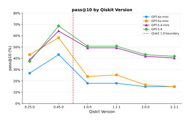
<figcaption class="paper-figure-caption"><b>Fig 1.</b> Fig. 1. pass@10 by Qiskit version for all four models. Every model peaks at the pre-1.0 release 0.45.0 and drops sharply across the Qiskit 1.0 boundary (dashed line), then continues to erode through the 2.x releases.</figcaption>
</figure>
</div>
<p><strong>Summary.</strong> This paper evaluates how well large language models can fix bugs in quantum circuits written using Qiskit. The authors find that performance metrics are misleading because the underlying benchmark itself becomes invalid as the quantum framework updates. They conclude that robust evaluation requires explicitly pinning both the benchmark and the software version.</p>
<p><strong>Why it may be interesting.</strong> It establishes rigorous standards for evaluating AI assistance in quantum software development, which is crucial for any field relying on complex quantum circuit implementation.</p>
<details>
<summary>Detailed structure</summary>
<p><strong>Main problem.</strong> The study benchmarks Large Language Models (LLMs) on automatically repairing quantum programs written in Qiskit using the Bugs4Q dataset.</p>
<p><strong>Main result.</strong> LLM performance is highly dependent on the specific version of the underlying quantum framework (Qiskit), and many apparent successes are due to environmental compatibility rather than true repair correctness.</p>
<p><strong>Method.</strong> The authors evaluate four LLMs by generating multiple repair candidates for 67 known defects across six pinned versions of Qiskit, using pass@k metrics.</p>
<p><strong>Model / system.</strong> The system under test is quantum computation implemented via Qiskit programs containing real, documented defects sourced from the Bugs4Q benchmark.</p>
<p><strong>Key observables.</strong> Pass@10 rate, executability status across different Qiskit versions, and the proportion of successful repairs occurring on invalid benchmark entries.</p>
<p><strong>Important parameters / regimes.</strong> Six pinned Qiskit releases (e.g., 0.25.0 to 2.3.1), and the number of repair candidates tested per defect (up to 10).</p>
<p><strong>Assumptions / limitations.</strong> The primary assumption challenged is that benchmark labels remain valid across software updates; correctness depends on the (benchmark, version) pair.</p>
<p><strong>Figures summary.</strong> Figure 1 illustrates the pass@10 rate peaking at Qiskit 0.45.0 and declining sharply after the Qiskit 1.0 transition, while Table III shows performance restricted to valid pairs.</p>
<p><strong>Paper structure.</strong> The paper introduces the problem of benchmarking quantum code repair, details the version-pinned evaluation protocol using Bugs4Q across multiple LLMs, presents results showing version dependency, and concludes by advocating for mandatory benchmark validation before repair assessment.</p>
</details>
<details>
<summary>Abstract</summary>
<p>In quantum programs, Bugs4Q is a widely used benchmark containing real quantum defects. However, its evaluation assumes that benchmark labels remain valid and that generated fixes execute in the target environment. We evaluate two Bugs4Q versions containing 67 unique real Qiskit defects, adding executable tests where missing, and re-run all entries across six pinned Qiskit releases (0.25.0, 0.45.0, 1.0.0, 1.1.1, 2.0.0, and 2.3.1). We find that quantum benchmarks can suffer from silent label inversion: entries become invalid without errors when reference fixes stop executing or buggy programs no longer reproduce failures. Thus, correctness depends on the (benchmark, version) pair rather than the benchmark alone. We evaluate four LLMs (GPT-4o-mini, GPT-5o-mini, GPT-5.4, and GPT-5.4-mini), generating up to 10 repair candidates per defect and testing them across all versions. GPT-5.4 achieves the highest pass@10 (48.8%), followed by GPT-5.4-mini (47.3%), GPT-5o-mini (30.3%), and GPT-4o-mini (22.6%). All models perform best on Qiskit 0.45.0 and decline after the Qiskit 1.0 transition. Many failures arise from deprecated or incompatible APIs rather than incorrect repairs, and 64\% of successful repairs occur on entries invalid under the target version. We release a re-validated, version-pinned Bugs4Q benchmark and show that benchmark validation must precede repair evaluation.</p>
</details>
<p><sub><a href="#top">↑ back to top</a></sub></p>

<p><a id="paper-2607.09145"></a></p>
<h3 id="constraint-preserving-qaoa-for-personnel-rostering-coverage-preserving-and-guarded-xy-mixer-constructions"><a href="http://arxiv.org/abs/2607.09145v1">Constraint-Preserving QAOA for Personnel Rostering: Coverage-Preserving and Guarded-XY Mixer Constructions</a></h3>
<p><strong>Authors:</strong> Aruna Gupta, S R Hassan<br>
<strong>Type:</strong> theory · <strong>Category:</strong> quantum information and computing · <strong>PDF:</strong> <a href="https://arxiv.org/pdf/2607.09145v1">https://arxiv.org/pdf/2607.09145v1</a><br>
<strong>Analysis basis:</strong> full PDF text, analyzed in chunks</p>
<div class="figure-strip-hint">↔ Scroll figures horizontally</div>
<div class="paper-figures-scroll">
<figure class="paper-figure-card">
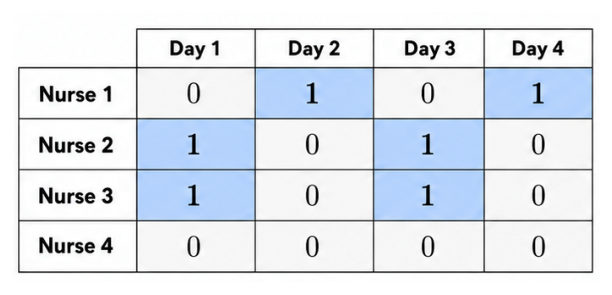
<figcaption class="paper-figure-caption"><b>Fig 1.</b> Figure 1: Schematic nurse–day binary encoding of a personnel roster. Rows represent nurses, columns represent days, and each matrix entry qn,d ∈{0, 1} specifies whether nurse n is assigned on day d. Shaded cells correspond to qn,d = 1.</figcaption>
</figure>
<figure class="paper-figure-card">
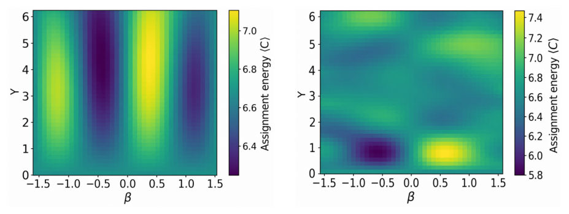
<figcaption class="paper-figure-caption"><b>Fig 2.</b> Figure 2: Depth-one assignment-cost landscapes used to calibrate the Hamiltonian rescaling factor. The selected values are λs = 0.1 for Coverage-XY and λs = 2.25 for Guarded-XY.</figcaption>
</figure>
<figure class="paper-figure-card">
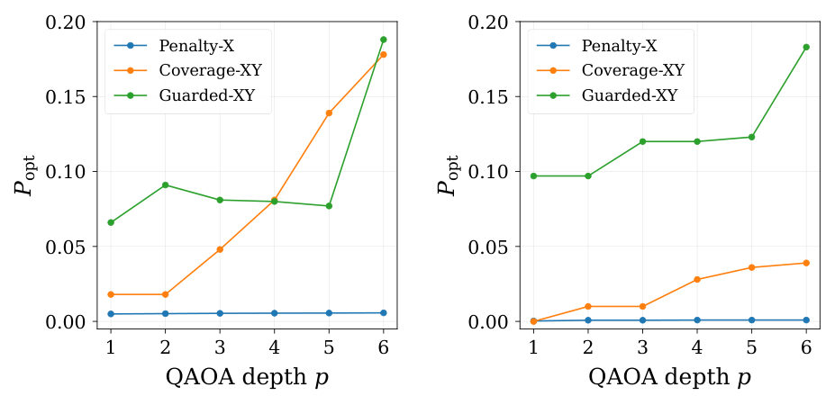
<figcaption class="paper-figure-caption"><b>Fig 3.</b> Figure 3: Optimal-state probability Popt as a function of QAOA depth. Panel (a) shows expectation-value optimization and panel (b) shows CVaR optimization.</figcaption>
</figure>
<figure class="paper-figure-card">
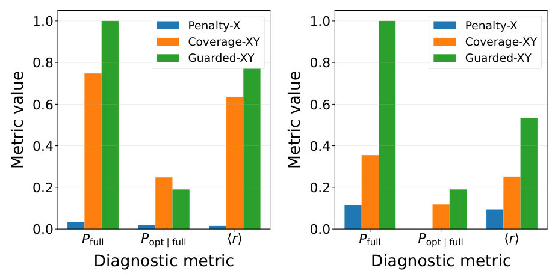
<figcaption class="paper-figure-caption"><b>Fig 4.</b> Figure 4: Distribution-quality diagnostics at the maximum simulated depth p = 6. Shown are the full-feasibility probability Pfull, the feasibility-conditioned optimal probability Popt|full, and the output-averaged approximation ratio ⟨r⟩.</figcaption>
</figure>
<figure class="paper-figure-card">
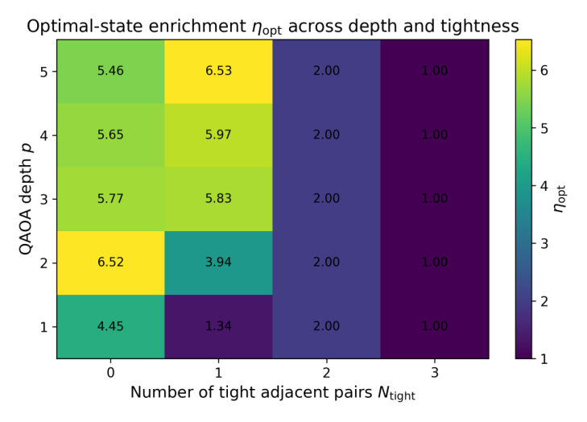
<figcaption class="paper-figure-caption"><b>Fig 5.</b> Figure 5: Optimal-state enrichment ηopt for the Guarded-XY+tight ansatz as a function of QAOA depth and workload tightness Ntight. Each column corresponds to a representative workload with the indicated number of saturated adjacent-day pairs.</figcaption>
</figure>
</div>
<p><strong>Summary.</strong> This work introduces a constraint-preserving Quantum Approximate Optimization Algorithm (QAOA) framework tailored for personnel rostering. Instead of using penalty terms that allow exploration of invalid states, the authors embed hard constraints directly into the mixer Hamiltonian via guarded and tight-pattern mixers. This guarantees that the quantum evolution remains confined to only feasible schedules, leading to higher quality optimization results.</p>
<p><strong>Why it may be interesting.</strong> It provides a concrete, mathematically rigorous technique for enforcing hard constraints in quantum optimization algorithms, which is crucial for applying QAOA to real-world scheduling problems where infeasible states must be strictly avoided.</p>
<details>
<summary>Detailed structure</summary>
<p><strong>Main problem.</strong> The paper addresses how to apply the Quantum Approximate Optimization Algorithm (QAOA) to solve complex, constrained combinatorial optimization problems like personnel rostering.</p>
<p><strong>Main result.</strong> The authors propose a novel constraint-preserving QAOA framework that embeds hard scheduling constraints directly into the mixer Hamiltonian, guaranteeing feasible evolution by construction.</p>
<p><strong>Method.</strong> They develop specific mixer constructions—the guarded-XY and tight-pattern extensions—to confine the quantum dynamics exclusively to the subspace of physically valid solutions.</p>
<p><strong>Model / system.</strong> The model is a binary rostering problem formulated on a transition graph, requiring satisfaction of daily coverage and no-consecutive-duty constraints. The physics involves designing specialized mixer Hamiltonians ($\hat{H}_M$) for QAOA.</p>
<p><strong>Key observables.</strong> Output distribution quality (concentration on optimal feasible schedules), feasibility probability (aiming for unit probability by construction).</p>
<p><strong>Important parameters / regimes.</strong> The workload parameters ($W_d$), the size of the roster ($N$ nurses, $D$ days), and the QAOA depth/mixing angles.</p>
<p><strong>Assumptions / limitations.</strong> The core assumption is that constraints can be perfectly encoded into the mixer Hamiltonian to restrict dynamics, distinguishing this from penalty-based methods.</p>
<p><strong>Figures summary.</strong> Figure 1 schematically illustrates the binary encoding of a personnel roster for $N=4$ nurses and $D=4$ days.</p>
<p><strong>Paper structure.</strong> The paper contrasts conventional penalty-based QAOA approaches with their novel constraint-preserving method. It details the construction of guarded and tight-pattern mixers, proves feasibility preservation by construction, and validates the approach via statevector simulations against existing formulations.</p>
</details>
<details>
<summary>Abstract</summary>
<p>The Quantum Approximate Optimization Algorithm (QAOA) is a promising framework for combinatorial optimization, but constrained problems are commonly handled using energetic penalty terms that require calibration and allow infeasible configurations to remain dynamically accessible. We develop a constraint-preserving QAOA framework for personnel rostering in which hard scheduling constraints are embedded directly into the mixer Hamiltonian. Using a binary rostering model with daily coverage and no-consecutive-duty constraints, we formulate the dynamics from a transition-graph perspective and introduce a guarded-XY mixer that confines the evolution to the fully feasible scheduling manifold. We further distinguish feasibility preservation from feasible-transition design and propose a tight-pattern extension that introduces collective feasible exchanges in saturated workload segments where local guarded exchanges alone are insufficient. Exact statevector simulations demonstrate that, compared with Penalty-X and Coverage-XY formulations under both expectation-value and Conditional Value-at-Risk optimization, the proposed approach eliminates hard-constraint penalty calibration, guarantees feasible evolution by construction, and consistently yields higher-quality output distributions with stronger concentration on optimal feasible schedules. To the best of our knowledge, this is the first constraint-preserving QAOA formulation for personnel rostering, and the transition-graph framework is readily applicable to a broad class of constrained quantum optimization problems.</p>
</details>
<p><sub><a href="#top">↑ back to top</a></sub></p>

<p><a id="paper-2607.09341"></a></p>
<h3 id="is-the-eyring-plot-misleading-a-case-for-arrhenius-analysis-of-activation-parameters"><a href="http://arxiv.org/abs/2607.09341v1">Is the Eyring Plot Misleading? A Case for Arrhenius Analysis of Activation Parameters</a></h3>
<p><strong>Authors:</strong> Titus S. van Erp<br>
<strong>Type:</strong> theory · <strong>Category:</strong> statistical mechanics · <strong>PDF:</strong> <a href="https://arxiv.org/pdf/2607.09341v1">https://arxiv.org/pdf/2607.09341v1</a><br>
<strong>Analysis basis:</strong> full PDF text, analyzed in chunks</p>
<div class="figure-strip-hint">↔ Scroll figures horizontally</div>
<div class="paper-figures-scroll">
<figure class="paper-figure-card">
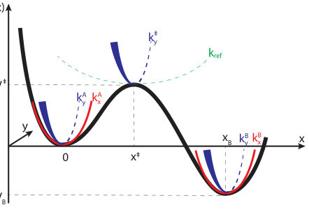
<figcaption class="paper-figure-caption"><b>Fig 1.</b> Figure 1: Two-dimensional potential energy surface. Curvatures along the reaction coordi- nate x in the reactant and product wells are indicated in red. Curvatures along the orthog- onal coordinate y at the reactant, transition, and product states are shown in blue. The hy- pothetical reference curvature kref discussed in the text is indicated by the dashed green line.</figcaption>
</figure>
</div>
<p><strong>Summary.</strong> This paper critically examines whether the Eyring or Arrhenius formulation is more fundamentally correct for describing reaction rates. By analyzing theoretical derivations from TST using harmonic and hard-core potentials, the author argues that an Arrhenius analysis yields parameters ($\Delta H^\ddagger, \Delta S^\ddagger$) that are more physically consistent than those derived from the standard Eyring plot due to underlying mathematical inconsistencies.</p>
<p><strong>Why it may be interesting.</strong> While focused on chemical kinetics, the rigorous comparison of different theoretical frameworks (Eyring vs. Arrhenius) for extracting fundamental thermodynamic quantities ($\Delta H^\ddagger, \Delta S^\ddagger$) is highly relevant to understanding approximations and limitations in statistical mechanical models used across AMO physics.</p>
<details>
<summary>Detailed structure</summary>
<p><strong>Main problem.</strong> The paper debates the relative fundamental nature of the Eyring representation versus the Arrhenius representation for calculating chemical reaction rate constants from temperature-dependent measurements.</p>
<p><strong>Main result.</strong> The author argues that activation enthalpies and entropies derived from an Arrhenius fit are arguably more physically relevant than those obtained directly from the standard Eyring plot analysis due to inherent dimensional mismatches in the free energy of activation ($\Delta G^\ddagger$).</p>
<p><strong>Method.</strong> The analysis compares rate expressions derived from Transition State Theory (TST), contrasting harmonic approximation results with derivations using reactive flux formalism and proposing a modified potential restraint approach.</p>
<p><strong>Model / system.</strong> The study models chemical reactions using TST, comparing the standard Eyring equation ($k \propto e^{-eta \Delta G^\ddagger}$) against the Arrhenius form ($k \propto e^{eta E_a}$). It utilizes harmonic and hard-core potential approximations to analyze the temperature dependence of activation parameters.</p>
<p><strong>Key observables.</strong> Rate constant ($k$), Activation Enthalpy ($\Delta H^\ddagger$), Activation Entropy ($\Delta S^\ddagger$), Gibbs Free Energy of Activation ($\Delta G^\ddagger$).</p>
<p><strong>Important parameters / regimes.</strong> Temperature ($T$), Planck's constant ($h$), Boltzmann constant ($k_B$), and various potential energy surface parameters.</p>
<p><strong>Assumptions / limitations.</strong> The analysis relies on harmonic approximations for potentials, assumes the validity of TST derivations, and proposes modifications (like using an infinite square-well restraint) to improve parameter consistency.</p>
<p><strong>Figures summary.</strong> Figure S1 illustrates a particle confined in a water slab between two membranes, representing a hard-core system used in model calculations.</p>
<p><strong>Paper structure.</strong> The paper progresses by first establishing the conflict between Eyring and Arrhenius interpretations; it then details derivations using classical statistical mechanics and reactive flux expressions; finally, it proposes an alternative framework using modified potential restraints to yield consistent Arrhenius parameters.</p>
</details>
<details>
<summary>Abstract</summary>
<p>A common view in physical chemistry literature is that the Eyring representation, in which a linear fit of $\ln(k/T)$ versus $1/T$ is attempted, is more fundamental than the Arrhenius representation, $\ln(k)$ versus $1/T$. This perception is typically motivated by its derivation from statistical mechanics and quantum mechanics, and by the interpretation of the intercept in terms of the activation entropy $ΔS^\ddagger$, whereas the Arrhenius equation and its prefactor are often regarded as purely phenomenological. However, harmonic approximation models yield exact linearity in Arrhenius plots but not in Eyring plots, although for real experimental data both generally appear equally linear within typical experimental accuracy. Furthermore, the impression that the Eyring formulation is inherently quantum mechanical arises from the presence of the Planck constant in the prefactor, whereas this term results from normalization conventions in the partition function. This also highlights an interpretational issue in $ΔG^\ddagger$, which is based on partition functions of different dimensionality between reactant and transition state. This dimensional mismatch can be reformulated in an alternative representation that improves interpretability and reduces to an Arrhenius-type expression in which the prefactor is directly related to an entropy of activation. In this framework, both activation enthalpy and entropy obtained from an Arrhenius fit are arguably more physically relevant than the corresponding Eyring fit values.</p>
</details>
<p><sub><a href="#top">↑ back to top</a></sub></p>

<p><a id="paper-2607.09032"></a></p>
<h3 id="quantum-logic-as-the-logic-of-contexts"><a href="http://arxiv.org/abs/2607.09032v1">Quantum Logic as the Logic of Contexts</a></h3>
<p><strong>Authors:</strong> Haruki Emori, Atsushi Iriki, Andrei Khrennikov, Kazunori Kondo<br>
<strong>Type:</strong> theory · <strong>Category:</strong> other · <strong>PDF:</strong> <a href="https://arxiv.org/pdf/2607.09032v1">https://arxiv.org/pdf/2607.09032v1</a><br>
<strong>Analysis basis:</strong> full PDF text, analyzed in chunks</p>
<div class="figure-strip-hint">↔ Scroll figures horizontally</div>
<div class="paper-figures-scroll">
<figure class="paper-figure-card">
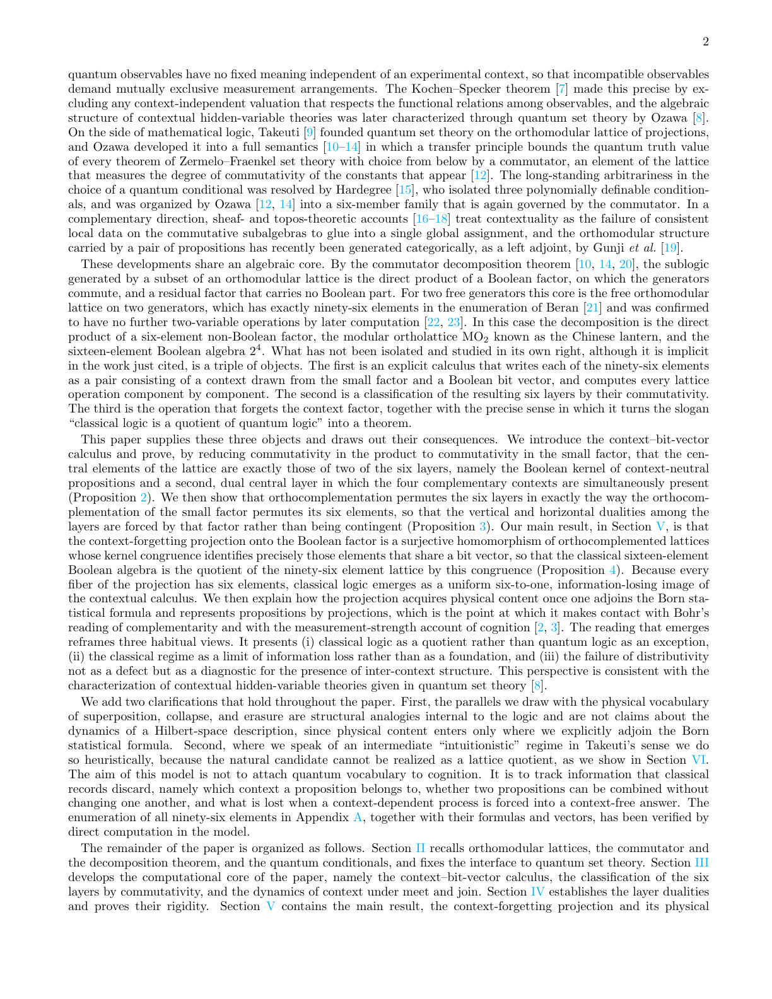
<figcaption class="paper-figure-caption"><b>Fig 1.</b> Low-resolution page preview, page 2</figcaption>
</figure>
<figure class="paper-figure-card">
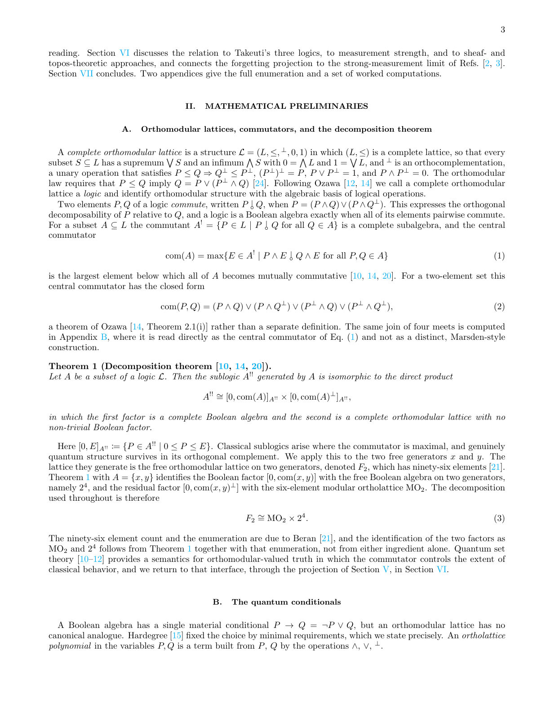
<figcaption class="paper-figure-caption"><b>Fig 2.</b> Low-resolution page preview, page 3</figcaption>
</figure>
<figure class="paper-figure-card">
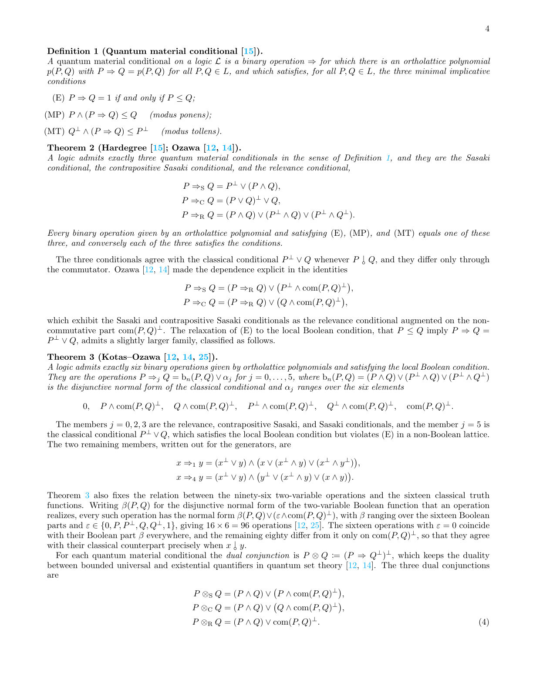
<figcaption class="paper-figure-caption"><b>Fig 3.</b> Low-resolution page preview, page 4</figcaption>
</figure>
<figure class="paper-figure-card">
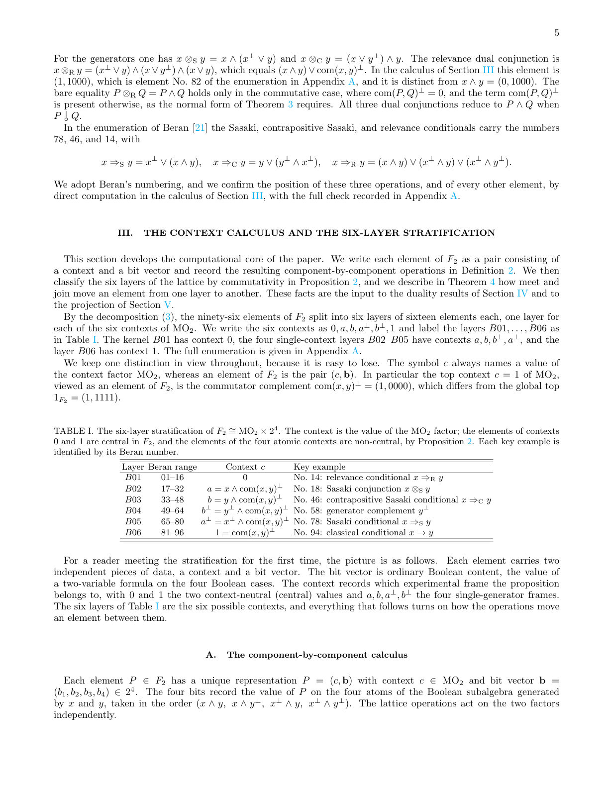
<figcaption class="paper-figure-caption"><b>Fig 4.</b> Low-resolution page preview, page 5</figcaption>
</figure>
<figure class="paper-figure-card">
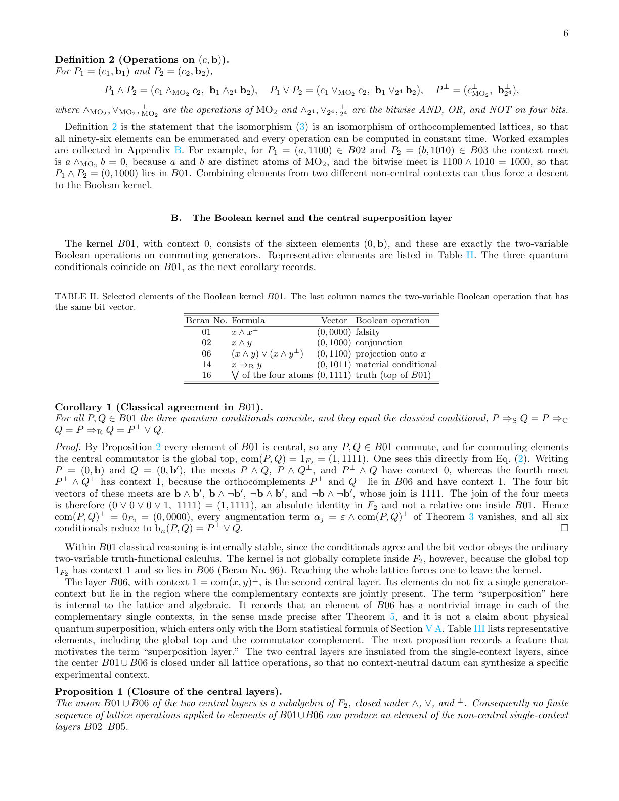
<figcaption class="paper-figure-caption"><b>Fig 5.</b> Low-resolution page preview, page 6</figcaption>
</figure>
</div>
<p><strong>Summary.</strong> This paper redefines quantum logic by treating classical logic as a derived, information-losing image of a richer contextual calculus built on an orthomodular lattice. Using a component-wise algebra over contexts and bit vectors, the authors rigorously demonstrate that contextuality is fundamental, making classical reasoning a specific, restricted limit case.</p>
<p><strong>Why it may be interesting.</strong> While highly abstract, this work provides a rigorous algebraic framework for understanding how quantum non-classicality (contextuality) structures logical inference beyond what is captured by standard Boolean or even orthomodular logics. It offers deep structural insights into the relationship between context and truth values.</p>
<details>
<summary>Detailed structure</summary>
<p><strong>Main problem.</strong> To reverse the conventional understanding of quantum logic, arguing that classical logic is a quotient of a richer contextual quantum logic rather than being its foundation.</p>
<p><strong>Main result.</strong> The paper proves that classical logic emerges as an information-losing, six-to-one image (a surjective homomorphism) from the full contextual calculus defined by the free orthomodular lattice on two generators.</p>
<p><strong>Method.</strong> The authors develop a context–bit-vector calculus based on decomposing the 96-element free orthomodular lattice into a direct product of a context factor and a Boolean content factor.</p>
<p><strong>Model / system.</strong> The model is an abstract algebraic structure: the free orthomodular lattice $F_2$ (with 96 elements), which is mathematically decomposed as $MO_2 	imes 2^4$. The 'contexts' are represented by the non-distributive factor $MO_2$, and the 'content' by the Boolean factor $2^4$.</p>
<p><strong>Key observables.</strong> Contextuality (dependence on context/order), commutativity of sublogics, and the structure of the projection onto classical logic.</p>
<p><strong>Important parameters / regimes.</strong> The size of the lattice (96 elements); the number of contexts (six layers derived from $MO_2$); the dimension of the Boolean content (four bits).</p>
<p><strong>Assumptions / limitations.</strong> Classical logic is treated as a limit or image resulting from 'forgetting' context, and structural analogies to physical processes like measurement are used.</p>
<p><strong>Figures summary.</strong> The notes reference Table I showing the six-layer stratification of $F_2$ based on contexts, and Appendix A enumerating all 96 elements organized into these layers.</p>
<p><strong>Paper structure.</strong> The paper establishes the algebraic model ($F_2 \sim MO_2 	imes 2^4$), defines component-wise operations in the context–bit-vector calculus, classifies the resulting six layers based on commutativity, and culminates by proving the existence of the context-forgetting projection onto classical logic.</p>
</details>
<details>
<summary>Abstract</summary>
<p>Quantum logic is usually presented as a non-classical departure from ordinary reasoning forced on us by quantum mechanics, with classical logic kept as the secure starting point. We argue for the opposite order of explanation in a finite and fully computable setting. The free orthomodular lattice on two generators has ninety-six elements, the direct product of a six-element non-distributive factor and a sixteen-element Boolean factor. Reading the first factor as a register of contexts and the second as Boolean content, we obtain a calculus whose elements are context--bit-vector pairs and whose operations act component by component. With this calculus we establish three results. First, we classify the six layers by commutativity, identifying the central kernel of context-neutral propositions together with a dual central layer in which all complementary contexts are present. Second, we show that orthocomplementation rearranges the layers exactly as the complementation of the small factor rearranges its elements, which makes the duality among the layers rigid rather than accidental. Third, we prove that the operation forgetting the context is a surjective homomorphism of orthocomplemented lattices whose quotient is the classical Boolean algebra, so that classical logic is a six-to-one, information-losing image of the contextual calculus.</p>
</details>
<p><sub><a href="#top">↑ back to top</a></sub></p>

<p><a id="paper-2607.08957"></a></p>
<h3 id="structural-origin-of-water-heat-capacity-anomaly-from-classical-and-quantum-simulations"><a href="http://arxiv.org/abs/2607.08957v1">Structural Origin of Water Heat Capacity Anomaly from Classical and Quantum Simulations</a></h3>
<p><strong>Authors:</strong> Kam-Tung Chan, Dylan A. Folkner, Margaret L. Berrens, Alexei A. Stuchebrukhov, Lee-Ping Wang, Davide Donadio<br>
<strong>Type:</strong> theory · <strong>Category:</strong> statistical mechanics · <strong>PDF:</strong> <a href="https://arxiv.org/pdf/2607.08957v1">https://arxiv.org/pdf/2607.08957v1</a><br>
<strong>Analysis basis:</strong> full PDF text, analyzed in chunks</p>
<div class="figure-strip-hint">↔ Scroll figures horizontally</div>
<div class="paper-figures-scroll">
<figure class="paper-figure-card">
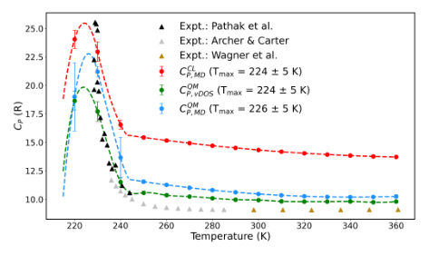
<figcaption class="paper-figure-caption"><b>Fig 1.</b> FIG. 1: CP calculated directly using Equation 1 from polynomial fits to classical MD (red;</figcaption>
</figure>
<figure class="paper-figure-card">
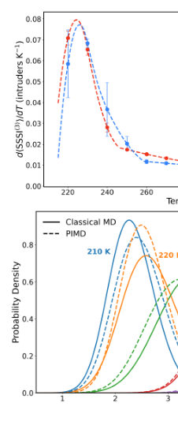
<figcaption class="paper-figure-caption"><b>Fig 2.</b> FIG. 2: (Top panel) d⟨SSSI(3)⟩</figcaption>
</figure>
<figure class="paper-figure-card">

<figcaption class="paper-figure-caption"><b>Fig 3.</b> FIG. 3: Fraction of HDL-like water (λ(T)) obtained using Equation 4 from classical MD</figcaption>
</figure>
<figure class="paper-figure-card">
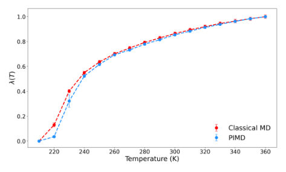
<figcaption class="paper-figure-caption"><b>Fig 4.</b> Figure 3, λ(T) increases most sharply at the transition temperature, consistent with the</figcaption>
</figure>
<figure class="paper-figure-card">
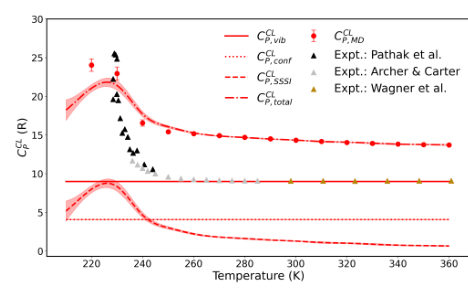
<figcaption class="paper-figure-caption"><b>Fig 5.</b> FIG. 4: CP from (a) classical MD (CCL P ) and (b) PIMD (CQM P ) simulations with the</figcaption>
</figure>
</div>
<p><strong>Summary.</strong> This work investigates the source of water's anomalous heat capacity by linking it directly to structural fluctuations between low-density and high-density local arrangements. Using molecular dynamics simulations, the authors show that these structural transitions, quantified by an order parameter, provide a microscopic explanation for both the supercooled maximum and the excess ambient $C_P$. The findings establish a quantitative link between liquid structure and macroscopic thermodynamics.</p>
<p><strong>Why it may be interesting.</strong> While focused on condensed matter thermodynamics, the rigorous separation of vibrational vs. configurational contributions and the use of advanced potentials/quantum corrections provide methodological insights relevant to modeling complex quantum many-body systems where structural changes drive macroscopic properties.</p>
<details>
<summary>Detailed structure</summary>
<p><strong>Main problem.</strong> The study aims to elucidate the structural origin responsible for water's anomalously large isobaric heat capacity ($C_P$) and its characteristic maximum upon supercooling.</p>
<p><strong>Main result.</strong> The anomalous $C_P$ is primarily attributed to structural fluctuations, quantified by a second-solvation-shell intruder order parameter ($   ext{SSSI}(3)$), which maps onto an effective enthalpy scale of $\approx 4 	ext{ kJ/mol}$ governing the interconversion between low- and high-density-like local structures.</p>
<p><strong>Method.</strong> The research employs molecular dynamics simulations, comparing classical and path-integral approaches to separate vibrational contributions from structural (configurational) ones. A two-state mapping is used to model the structural transitions.</p>
<p><strong>Model / system.</strong> The system studied is liquid water ($   ext{H}_2    ext{O}$), simulated using accurate machine-learning interatomic potentials (e.g., NEP3@MB-pol). The analysis focuses on local structural descriptors distinguishing between low-density and high-density environments.</p>
<p><strong>Key observables.</strong> Isobaric Heat Capacity ($C_P$), second-solvation-shell intruder order parameter ($   ext{SSSI}(3)$), fraction of HDL-like water ($\lambda(T)$), and the derivative $\partial\langle	ext{SSSI}(3)
angle / \partial T$.</p>
<p><strong>Important parameters / regimes.</strong> Effective enthalpy scale ($\Delta H_{	ext{L/H}}$) of $\approx 3-4 	ext{ kJ mol}^{-1}$; temperature regimes around supercooling and ambient conditions.</p>
<p><strong>Assumptions / limitations.</strong> The structural anomaly can be effectively modeled using a two-state approximation describing the interconversion between LDL-like and HDL-like local structures. Quantum effects are treated via path integrals or vibrational density of states corrections.</p>
<p><strong>Figures summary.</strong> Figures compare calculated $C_P$ (Classical MD vs. PIMD) against experiments, showing that structural derivatives ($\partial\langle	ext{SSSI}(3)
angle / \partial T$) track the $C_P$ maximum. Other figures illustrate $\lambda(T)$ and the temperature dependence of structural descriptors.</p>
<p><strong>Paper structure.</strong> The paper systematically analyzes $C_P$ using molecular dynamics, first addressing quantum corrections (Classical vs. PIMD). It then introduces a structural order parameter ($  ext{SSSI}(3)$) to decompose $C_P$, showing that the temperature dependence of this structure parameter directly correlates with the anomalous heat capacity maximum.</p>
</details>
<details>
<summary>Abstract</summary>
<p>Water isobaric heat capacity is anomalously large under ambient conditions and exhibits a sharp maximum upon supercooling. Using classical and path-integral molecular dynamics with accurate machine-learning interatomic potentials, we show that nuclear quantum effects primarily act by suppressing high-frequency vibrations, while the anomalous temperature dependence of the isobaric heat capacity originates from structural fluctuations, quantified by the second-solvent-shell intruder order parameter. A simple two-state mapping reveals an effective enthalpy scale of about 4 kJ/mol associated with the interconversion of low- and high-density-like local structures, providing a microscopic link between their population changes and the excess heat capacity from supercooled to ambient conditions.</p>
</details>
<p><sub><a href="#top">↑ back to top</a></sub></p>
</details>
<h2 id="secondary-cond-mat-archives">Secondary cond-mat archives</h2>
<p><em>Papers from cond-mat.mtrl-sci, mes-hall, other, soft, supr-con. These archives are de-prioritized — they appear at the end regardless of relevance score.</em></p>
<h3 id="relevant-in-secondary-archives-15">Relevant in secondary archives (15)</h3>

<p><a id="paper-2607.09422"></a></p>
<h3 id="action-factored-multi-agent-reinforcement-learning-for-scalable-quantum-device-tuning"><a href="http://arxiv.org/abs/2607.09422v1">Action-Factored Multi-Agent Reinforcement Learning for Scalable Quantum Device Tuning</a></h3>
<p><strong>Authors:</strong> Edwin De Nicolo, Rahul Marchand, Cornelius Carlsson, Pranav Vaidhyanathan, Natalia Ares<br>
<strong>Type:</strong> both · <strong>Category:</strong> quantum information and computing · <strong>PDF:</strong> <a href="https://arxiv.org/pdf/2607.09422v1">https://arxiv.org/pdf/2607.09422v1</a><br>
<strong>Analysis basis:</strong> full PDF text, analyzed in chunks
<strong>Topic relevance:</strong> 🔥 <code>QC/QI experiment</code> <strong>4/5</strong> · <code>quantum measurements</code> <strong>2/5</strong> · <code>spintronics-quantum-optics interface</code> <strong>2/5</strong> · <code>analog quantum simulation</code> <strong>1/5</strong> · <code>correlated / nonlocal dissipation</code> <strong>1/5</strong> · <code>driven-dissipative phase transition</code> <strong>1/5</strong> · <code>methods for driven-dissipative</code> <strong>1/5</strong> · <code>non-equilibrium dynamics</code> <strong>1/5</strong></p>
<div class="figure-strip-hint">↔ Scroll figures horizontally</div>
<div class="paper-figures-scroll">
<figure class="paper-figure-card">
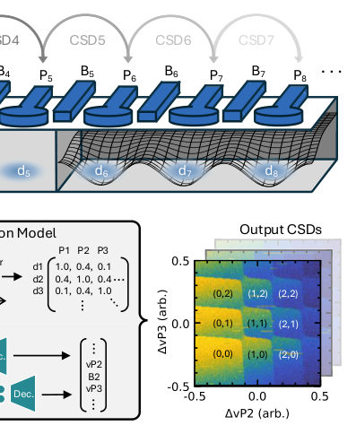
<figcaption class="paper-figure-caption"><b>Fig 1.</b> Figure 1: Algorithmic Flow of QADAPT (a) Barrier gates (Bx) interdigitate plunger gates (Px), and primarily control dot-dot tunnel couplings and charge occupations, respectively. All gates contribute in defining the confinement potential necessary to form quantum dots (d1...dD). Gate cross-talk can be approximated by a capacitive network, which in general extends beyond nearest neighbors, greatly complicating array tuning. Charge stability diagrams (CSDs) are acquired by sweeping the voltage on neighboring pairs of plunger gates and bear information on the array’s current tuning state. (b) Each CSD is passed through a virtualization model and tuning agent model. The virtualization model...</figcaption>
</figure>
<figure class="paper-figure-card">
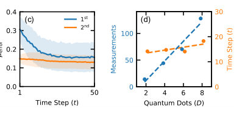
<figcaption class="paper-figure-caption"><b>Fig 2.</b> Figure 2: Gate Virtualization and Scaling Performance of QADAPT. a) Kalman filter’s posterior uncertainty (variance) σ against absolute estimation error ˆµerror for nearest neighbor gate-to-dot cross-capacitances. Each marker represents one time step in a 4-dot system (3 CSD measurements), averaged over 1000 episodes. The cross-capacitance has a fixed ground truth value of 0.7. A top-right to bottom-left trajectory demonstrates that capacitance estimates improve over time, and that the filter’s uncertainty tracks this improvement. b) same as a), but for second-nearest neighbor gate-to-dot cross-capacitances, with ground-truth values set to 0.3. The trajectory here is weaker but stable, as...</figcaption>
</figure>
<figure class="paper-figure-card">
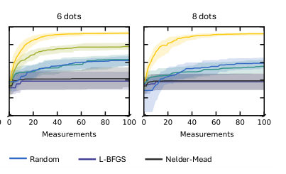
<figcaption class="paper-figure-caption"><b>Fig 3.</b> Figure 3: Domain-specific Benchmarks with Array Size. As the length of the quantum dot array increases from 2 to 8 (moving left to right), QADAPT maintains rapid convergence, out-performing all benchmark methods, including: model-based reinforcement learning (DreamerV3), Bayesian optimisation using Gaussian processes, the gradient free Nelder-Mead optimiser, the gradient-based Limited-memory Broyden-Fletcher-Goldfarb-Shanno algorithm (L-BFGS), and a random search. The score reflects normalized distance to the target voltage configuration across all gates, and is plotted using the cumulative minimum distance at each scan step. Lines represent averages over 100 runs, with an envelope of half...</figcaption>
</figure>
<figure class="paper-figure-card">
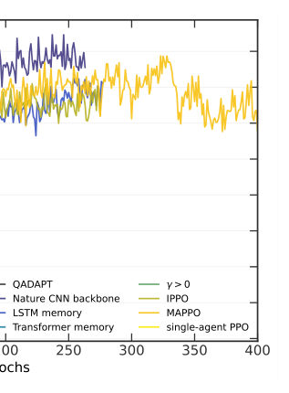
<figcaption class="paper-figure-caption"><b>Fig 4.</b> Figure 4: Average per-agent reward for QADAPT trained on a 4-dot array, in addition to each version of the ablated base model, detailed in Section 4. In all benchmarks, trained parameters are always taken from the epoch in which models performed best.</figcaption>
</figure>
<figure class="paper-figure-card">
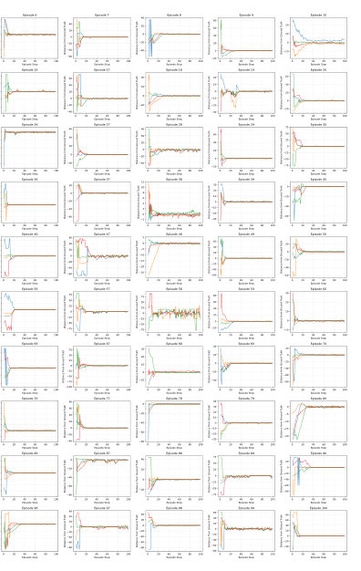
<figcaption class="paper-figure-caption"><b>Fig 5.</b> Figure 5: Trained agent behavior sampled over 100 episodes for a 4-dot system. The four colors in each graph represent the signed distance to the ground truth position in voltage space for each of the plunger gate agents.</figcaption>
</figure>
</div>

<p><strong>Summary.</strong> This paper introduces QADAPT, a novel Multi-Agent Reinforcement Learning framework designed to automate the calibration of large quantum processors. By learning an adaptive, factored representation of the control space, it effectively decouples agent actions despite strong physical cross-talk. This allows for rapid, scalable tuning that generalizes robustly to larger devices without retraining.</p>
<p><strong>Why it may be interesting.</strong> The core technique—using learned factorizations in MARL to handle complex, coupled control landscapes—is highly relevant for controlling open quantum systems where parameter interactions are non-trivial and scale poorly with device size.</p>
<details>
<summary>Detailed structure</summary>
<p><strong>Main problem.</strong> Developing a scalable method for tuning large quantum devices by overcoming challenges like parameter cross-talk and non-stationarity in multi-agent reinforcement learning (MARL).</p>
<p><strong>Main result.</strong> The proposed framework achieves zero-shot generalization to unseen device sizes and maintains a constant number of convergence steps, providing a scalable route for rapid calibration.</p>
<p><strong>Method.</strong> It uses an online learned factored representation of the action space within a MARL framework (QADAPT) to decouple agent control and minimize interference during tuning.</p>
<p><strong>Model / system.</strong> The work applies to electrostatically-defined quantum-dot arrays (semiconductor spin qubits) and superconducting transmon qubits. Tuning involves calibrating gate voltages or controlling qubit parameters like frequency and coupling strengths.</p>
<p><strong>Key observables.</strong> Charge stability diagrams (CSDs), all-XY output patterns, target charge occupations, and tunnel couplings.</p>
<p><strong>Important parameters / regimes.</strong> Gate voltages, inter-dot capacitances, bare frequencies ($\omega_{01}$), anharmonicity ($\alpha$), and cross-talk coupling strengths ($\lambda_{ij}$).</p>
<p><strong>Assumptions / limitations.</strong> The model assumes that parameter updates can be locally approximated or linearized for the purpose of defining a separable action space; it also notes neglecting full flux noise effects in one context.</p>
<p><strong>Figures summary.</strong> Figures illustrate algorithmic flow, Kalman filter performance for cross-capacitance estimation, and convergence plots showing QADAPT's superior performance across increasing qubit/dot counts compared to classical optimizers.</p>
<p><strong>Paper structure.</strong> The paper introduces the problem of large-scale quantum device tuning under cross-talk. It proposes QADAPT, detailing its adaptive action-space factorization using online capacitance estimation (Kalman filter). The method is then applied sequentially to two physical systems: quantum dot arrays and superconducting transmon qubits, demonstrating scalability and convergence.</p>
</details>
<details>
<summary>Abstract</summary>
<p>Cooperative multi-agent reinforcement learning is well suited to problems with large parameter spaces and exploitable local structure, such as the tuning of electrostatically-defined quantum-dot arrays. However, if parameter cross-talk is strong, a non-stationary environment from the perspective of any individual agent can destabilize learning - the same effect that plagues manual tuning of such systems. We propose using a factored representation of the action space, learned online, to decouple agents and minimize their interference. Our framework, QADAPT, uses this factorization to efficiently learn shared policies based on local measurements and rewards. With this modular strategy, we achieve zero-shot generalization to unseen quantum device sizes and maintain an approximately constant number of convergence steps to reach target regimes. This work provides a scalable route toward the rapid calibration of large-scale quantum processors.</p>
</details>
<p><sub><a href="#top">↑ back to top</a></sub></p>

<p><a id="paper-2607.08840"></a></p>
<h3 id="fermion-mediated-casimir-effect-on-mesoscopic-rings-implementing-non-clifford-swapmath732math-gates"><a href="http://arxiv.org/abs/2607.08840v1">Fermion-mediated Casimir effect on mesoscopic rings implementing non-Clifford SWAP$^α$ gates</a></h3>
<p><strong>Authors:</strong> Liang Du, Qing-Dong Jiang, Yijia Wu<br>
<strong>Type:</strong> theory · <strong>Category:</strong> quantum information and computing · <strong>PDF:</strong> <a href="https://arxiv.org/pdf/2607.08840v1">https://arxiv.org/pdf/2607.08840v1</a><br>
<strong>Analysis basis:</strong> full PDF text, analyzed in chunks
<strong>Topic relevance:</strong> <code>Keldysh / 2PI / non-Gaussian methods</code> <strong>3/5</strong> · <code>analog quantum simulation</code> <strong>3/5</strong> · <code>spintronics-quantum-optics interface</code> <strong>3/5</strong> · <code>Kondo &amp; dissipative impurity</code> <strong>2/5</strong> · <code>exotic spin models in light-matter</code> <strong>2/5</strong> · <code>methods for driven-dissipative</code> <strong>2/5</strong> · <code>correlated / nonlocal dissipation</code> <strong>1/5</strong> · <code>correlated cavity matter</code> <strong>1/5</strong> · <code>driven-dissipative phase transition</code> <strong>1/5</strong> · <code>entanglement &amp; information structure</code> <strong>1/5</strong> · <code>non-equilibrium dynamics</code> <strong>1/5</strong></p>
<div class="figure-strip-hint">↔ Scroll figures horizontally</div>
<div class="paper-figures-scroll">
<figure class="paper-figure-card">
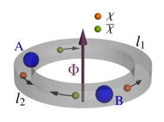
<figcaption class="paper-figure-caption"><b>Fig 1.</b> FIG. 1. A mesoscopic ring supporting a persistent current and hosting two objects (localized states) A and B. Spin- degenerate itinerant electrons with opposite chiralities χ and ¯χ propagate between A and B along two paths of lengths l1 and l2, respectively.</figcaption>
</figure>
<figure class="paper-figure-card">
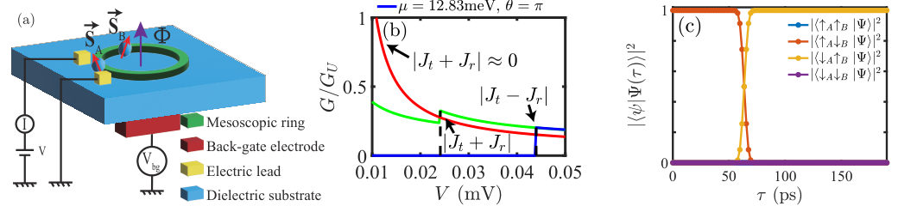
<figcaption class="paper-figure-caption"><b>Fig 2.</b> FIG. 3. (a) Schematic of the device for measuring the differential conductance and implementing the SWAPα gate. (b) Differential conductance G (in the unit of GU ≡2e2/h) for different interaction strength at Kondo temperature Tk = 0.01K. Green and red curves: in the absence of the magnetic flux (θ = 0), the conductance exhibits peaks at different bias voltages for different chemical potentials µ. Blue curve: the peak position reaches its maximum at θ = π. Other parameters are the same as those in Fig. 2. (c) Time evolution of a qubit initialized in the state |Ψ(τ = 0)⟩= |↑A↓B⟩under a magnetic-flux pulse θ(τ) = θ0sech2[2λ(τ −τ0)] with τ0 = 5/λ, θ0 = π, and 2λ = 0.2279(ps)−1. Other parameters...</figcaption>
</figure>
</div>

<p><strong>Summary.</strong> The paper demonstrates how the Casimir interaction mediated by itinerant fermions in mesoscopic rings can be controlled using the Aharonov-Bohm effect. This tunable, long-range interaction provides a novel platform to implement non-Clifford SWAP^alpha quantum gates between distant spin qubits, thereby advancing solid-state quantum computation architectures.</p>
<p><strong>Why it may be interesting.</strong> This work bridges condensed matter physics (Casimir forces, mesoscopic transport) directly into quantum information science by providing a physical mechanism for long-range qubit coupling that is controllable via external fields.</p>
<details>
<summary>Detailed structure</summary>
<p><strong>Main problem.</strong> The goal is to engineer long-range interactions necessary for implementing non-Clifford SWAP^alpha gates between spatially separated spin qubits.</p>
<p><strong>Main result.</strong> The fermion-mediated Casimir interaction, termed the Aharonov-Bohm–Casimir (ABC) effect, provides a tunable, long-range ($\sim l^{-1}$) mechanism to achieve this gate operation.</p>
<p><strong>Method.</strong> The authors derive an effective interaction Hamiltonian from the fermionic Green's function formalism and analyze its dependence on the magnetic flux via the Aharonov-Bohm phase.</p>
<p><strong>Model / system.</strong> The system consists of mesoscopic rings hosting itinerant electrons (fermions) coupled to localized spin-1/2 moments acting as qubits. The physics is governed by the interplay between the Casimir interaction and the AB effect.</p>
<p><strong>Key observables.</strong> Casimir interaction strength, differential conductance G, and the resulting gate parameter alpha ($\alpha$).</p>
<p><strong>Important parameters / regimes.</strong> Magnetic flux $\Phi$ (or dimensionless phase $ heta$), electron hopping parameters ($J_t, J_r$), and the ring length $l$.</p>
<p><strong>Assumptions / limitations.</strong> The analysis relies on a weak-coupling expansion of the interaction energy formula.</p>
<p><strong>Figures summary.</strong> Figure 1 illustrates the mesoscopic ring setup. Figure 2 shows the ABC interaction strength dependence on flux $   heta$, comparing theoretical approximations. Figure 3 schematics detail the measurement process using differential conductance to extract coupling parameters for gate implementation.</p>
<p><strong>Paper structure.</strong> The paper establishes the physical platform (mesoscopic rings) and the mechanism (ABC effect), derives the effective Hamiltonian, analyzes its tunability via magnetic flux ($ heta$), and finally demonstrates how this tunable interaction can be used to realize specific quantum gates like $  ext{SWAP}^\alpha$.</p>
</details>
<details>
<summary>Abstract</summary>
<p>The Casimir effect is typically governed by intrinsic material properties and lacks in situ tunability. We show that, in mesoscopic rings, both the magnitude and sign of the fermion-mediated Casimir interaction can be controlled via the Aharonov-Bohm effect. The resulting interplay between the Aharonov-Bohm phase and the Casimir interaction provides a route to engineer long-range interactions. In particular, this mechanism enables the implementation of non-Clifford SWAP$^α$ gates between spatially separated spin qubits, thereby reducing the overhead for universal quantum computation and quantum error correction in spin-qubit architectures.</p>
</details>
<p><sub><a href="#top">↑ back to top</a></sub></p>

<p><a id="paper-2607.09525"></a></p>
<h3 id="chemical-frequency-combs-in-reaction-diffusion-oscillators"><a href="http://arxiv.org/abs/2607.09525v1">Chemical Frequency Combs in Reaction-Diffusion Oscillators</a></h3>
<p><strong>Authors:</strong> Krishnesh Krishnakumar Nair, Madhurendra Mishra, Zhen Qi, Adarsh Ganesan<br>
<strong>Type:</strong> both · <strong>Category:</strong> statistical mechanics · <strong>PDF:</strong> <a href="https://arxiv.org/pdf/2607.09525v1">https://arxiv.org/pdf/2607.09525v1</a><br>
<strong>Analysis basis:</strong> full PDF text, analyzed in chunks
<strong>Topic relevance:</strong> <code>driven-dissipative phase transition</code> <strong>3/5</strong> · <code>methods for driven-dissipative</code> <strong>3/5</strong> · <code>analog quantum simulation</code> <strong>2/5</strong> · <code>correlated / nonlocal dissipation</code> <strong>2/5</strong> · <code>non-equilibrium dynamics</code> <strong>2/5</strong> · <code>non-equilibrium universality</code> <strong>2/5</strong> · <code>Keldysh / 2PI / non-Gaussian methods</code> <strong>1/5</strong> · <code>entanglement &amp; information structure</code> <strong>1/5</strong> · <code>interference shaping light</code> <strong>1/5</strong> · <code>quantum optics experiment</code> <strong>1/5</strong></p>
<div class="figure-strip-hint">↔ Scroll figures horizontally</div>
<div class="paper-figures-scroll">
<figure class="paper-figure-card">
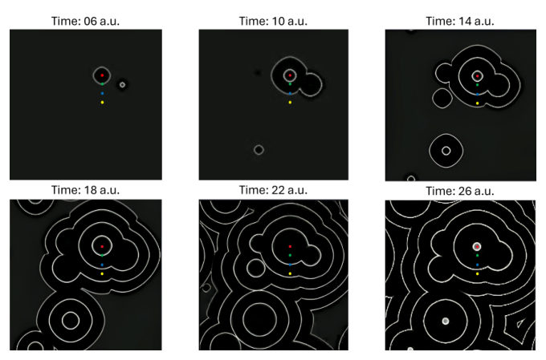
<figcaption class="paper-figure-caption"><b>Fig 1.</b> Figure 1: Time evolution of the simulated concentration field at t = 6, 10, 14, 18, 22, 26 a.u., showing nu- cleation of a circular wave source and its radial expansion into a system of target patterns, simulated at [A] = 0.6, [B] = 3, k1 = k2 = k3 = k4 = 1.0, DX = 0.1, DY = 0.01.</figcaption>
</figure>
<figure class="paper-figure-card">
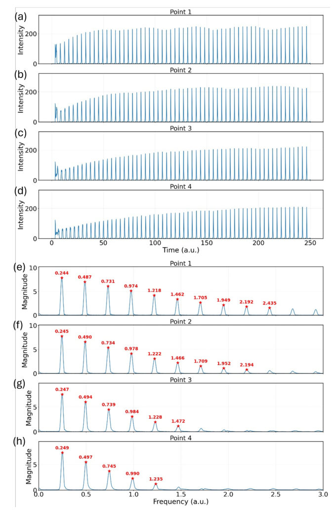
<figcaption class="paper-figure-caption"><b>Fig 2.</b> Figure 2: Simulated intensity-versus-time traces (a)–(d) and the corresponding FFT magnitude spectra (e)– (h) at the four radial sampling points marked in Figure 1, obtained for [A] = 0.6, [B] = 3, k1 = k2 = k3 = k4 = 1.0, DX = 0.1, and DY = 0.01. Both time and frequency are expressed in arbitrary units.</figcaption>
</figure>
<figure class="paper-figure-card">
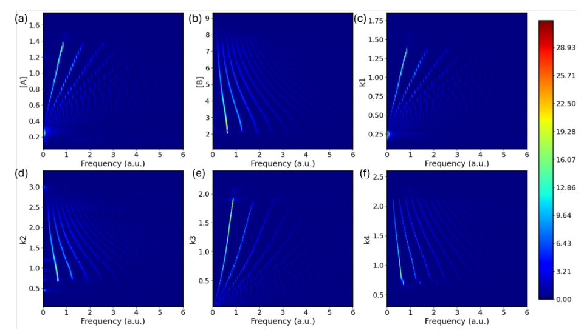
<figcaption class="paper-figure-caption"><b>Fig 3.</b> Figure 3: Frequency-parameter maps of the simulated FFT amplitude obtained by sweeping (a) [A] ∈ [0.15, 1.4], (b) [B] ∈[2.8, 8.0], (c) k1 ∈[0.15, 1.6], (d) k2 ∈[0.45, 3.0], (e) k3 ∈[0.2, 2.0], and (f) k4 ∈[0.6, 2.2] individually, with all other parameters held at baseline.</figcaption>
</figure>
<figure class="paper-figure-card">
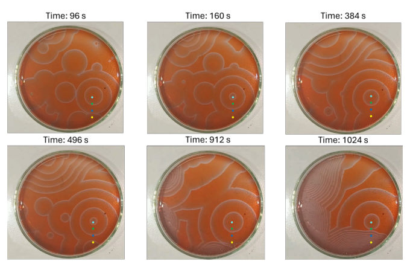
<figcaption class="paper-figure-caption"><b>Fig 4.</b> Figure 4: BZ reaction in a Petri dish at t = 96, 160, 384, 496, 912, 1024 s, showing the formation and propa- gation of target-wave patterns.</figcaption>
</figure>
<figure class="paper-figure-card">
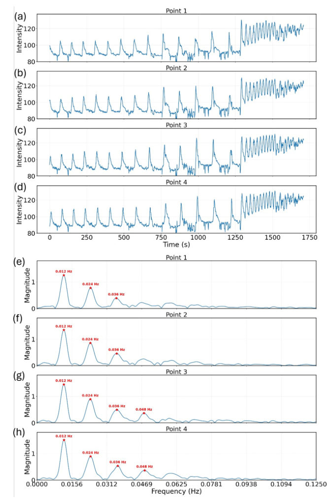
<figcaption class="paper-figure-caption"><b>Fig 5.</b> Figure 5: Experimental intensity-versus-time traces (a)–(d) and FFT magnitude spectra (e)–(h) at the four radial sampling points marked in Figure 4.</figcaption>
</figure>
</div>

<p><strong>Summary.</strong> This paper proves that chemical reaction-diffusion oscillators can function as a novel platform for generating frequency combs. By analyzing the Brusselator model mathematically and testing it experimentally with the BZ reaction, the authors show that nonlinear kinetics drive the system into a state exhibiting multiple, harmonically related spectral peaks. This bridges concepts from optics/solid-state physics into chemical dynamics.</p>
<p><strong>Why it may be interesting.</strong> While not directly quantum, the underlying principles of pattern formation, nonlinear dynamics, and self-organization in non-equilibrium systems are highly relevant to understanding open quantum systems, dissipative quantum computing models, and driven many-body physics.</p>
<details>
<summary>Detailed structure</summary>
<p><strong>Main problem.</strong> The study investigates whether chemical reaction-diffusion oscillators can generate frequency combs, a spectral phenomenon previously observed in optics and other physical systems.</p>
<p><strong>Main result.</strong> The authors demonstrate that the Brusselator model, representing a chemical system, naturally produces a clear fundamental frequency followed by an evenly spaced ladder of harmonics above the Hopf bifurcation threshold. This was confirmed both through numerical simulation and experimental measurements using the Belousov-Zhabotinsky reaction.</p>
<p><strong>Method.</strong> The work combines analytical stability analysis (deriving Hopf bifurcation conditions from rate equations) with time-series simulations and direct optical measurement techniques (FFT analysis of intensity traces).</p>
<p><strong>Model / system.</strong> The primary model used is the Brusselator kinetics, a well-known reaction-diffusion system. The experimental realization tested this concept using the Belousov-Zhabotinsky (BZ) reaction.</p>
<p><strong>Key observables.</strong> Frequency comb structure (fundamental frequency and equally spaced harmonics), Hopf bifurcation thresholds, time evolution of intensity patterns, and FFT spectra.</p>
<p><strong>Important parameters / regimes.</strong> Reactant concentrations ([A], [B]), kinetic parameters ($k_1$ through $k_4$), and the control parameter sweeps used to cross the stability boundaries.</p>
<p><strong>Assumptions / limitations.</strong> The analysis relies on linear stability theory around a steady state (Hopf bifurcation) and assumes that the trimolecular autocatalytic term is the sole source of nonlinear harmonic content.</p>
<p><strong>Figures summary.</strong> Figures show target wave patterns, time evolution across two distinct oscillation regimes due to reagent depletion, and corresponding FFT spectra confirming the equally spaced spectral grid structure.</p>
<p><strong>Paper structure.</strong> The paper establishes the context by reviewing frequency combs in other fields. It then mathematically analyzes the Hopf bifurcation conditions for the Brusselator model using parameter sweeps. Finally, it validates these findings experimentally using the BZ reaction, comparing simulated and measured harmonic spectra.</p>
</details>
<details>
<summary>Abstract</summary>
<p>Frequency combs, evenly spaced spectral lines locked to one fundamental frequency, are well known in optics and have also been found in phononic, magnonic, ferroelectric, and cosmological systems, but have not yet been studied in oscillating chemical reactions. In this work, we show that reaction-diffusion oscillators can also produce frequency combs. We use the Brusselator model and derive its Hopf bifurcation condition directly from the rate equations. We find that the trimolecular autocatalytic term is the only source of nonlinear harmonic content. Above the Hopf threshold, our simulations of target-wave patterns show a clear fundamental frequency followed by a long, evenly spaced ladder of harmonics, with each harmonic weaker than the one before it. We then vary the reactant concentrations and kinetic parameters one at a time and find that this comb structure holds across a wide range of values. We also test this idea experimentally using the Belousov-Zhabotinsky reaction. Intensity signals recorded at different points in a target pattern show a shared fundamental frequency with several weakening harmonics, matching the simulated pattern closely. Together, these results show that reaction-diffusion chemistry is a new platform for generating frequency combs.</p>
</details>
<p><sub><a href="#top">↑ back to top</a></sub></p>

<p><a id="paper-2607.08927"></a></p>
<h3 id="molecular-tuning-of-charge-transfer-resonance-in-plasmonic-nanocavities"><a href="http://arxiv.org/abs/2607.08927v1">Molecular Tuning of Charge-Transfer Resonance in Plasmonic Nanocavities</a></h3>
<p><strong>Authors:</strong> Hasher Irshada, Francesco Ciccarello, Konstantin Malchow, Christophe Galland, Katrine Qvortrup<br>
<strong>Type:</strong> both · <strong>Category:</strong> other · <strong>PDF:</strong> <a href="https://arxiv.org/pdf/2607.08927v1">https://arxiv.org/pdf/2607.08927v1</a><br>
<strong>Analysis basis:</strong> full PDF text, analyzed in chunks
<strong>Topic relevance:</strong> <code>correlated cavity matter</code> <strong>3/5</strong> · <code>driven-dissipative phase transition</code> <strong>3/5</strong> · <code>Tavis-Cummings &amp; cavity-many-emitter</code> <strong>2/5</strong> · <code>methods for driven-dissipative</code> <strong>2/5</strong> · <code>spintronics-quantum-optics interface</code> <strong>2/5</strong> · <code>Keldysh / 2PI / non-Gaussian methods</code> <strong>1/5</strong> · <code>Kondo &amp; dissipative impurity</code> <strong>1/5</strong> · <code>interference shaping light</code> <strong>1/5</strong> · <code>non-equilibrium dynamics</code> <strong>1/5</strong> · <code>quantum optics experiment</code> <strong>1/5</strong></p>
<div class="figure-strip-hint">↔ Scroll figures horizontally</div>
<div class="paper-figures-scroll">
<figure class="paper-figure-card">
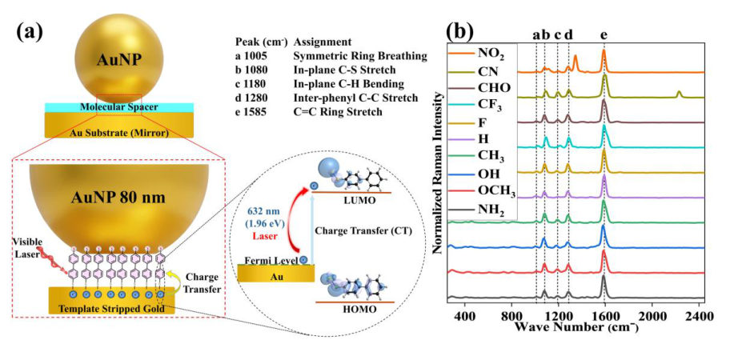
<figcaption class="paper-figure-caption"><b>Fig 1.</b> Fig. 1 (a) Schematic representation of the Au NPoM architecture and suggested charge transfer</figcaption>
</figure>
<figure class="paper-figure-card">
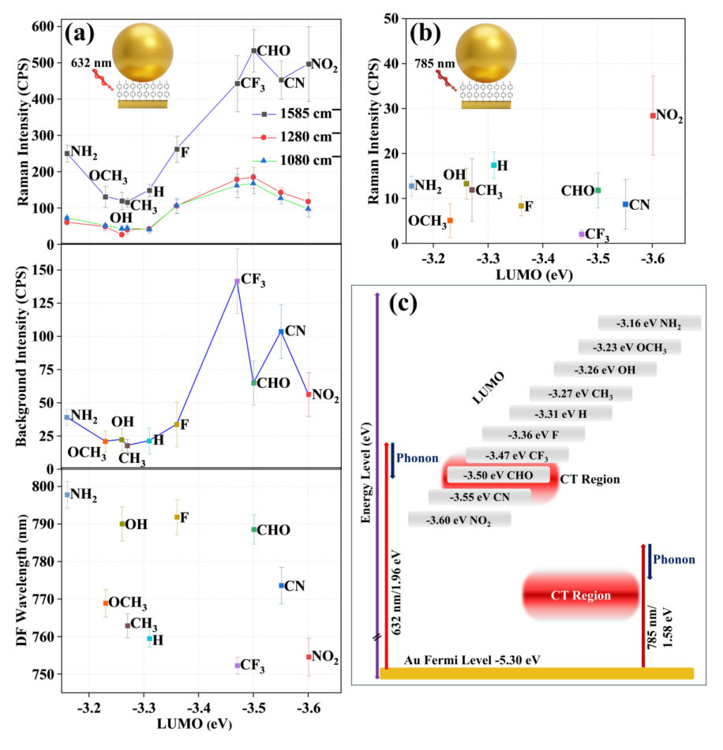
<figcaption class="paper-figure-caption"><b>Fig 2.</b> Fig. 2 (a) Correlation of calculated molecular LUMO energies with SERS intensities from Au</figcaption>
</figure>
<figure class="paper-figure-card">
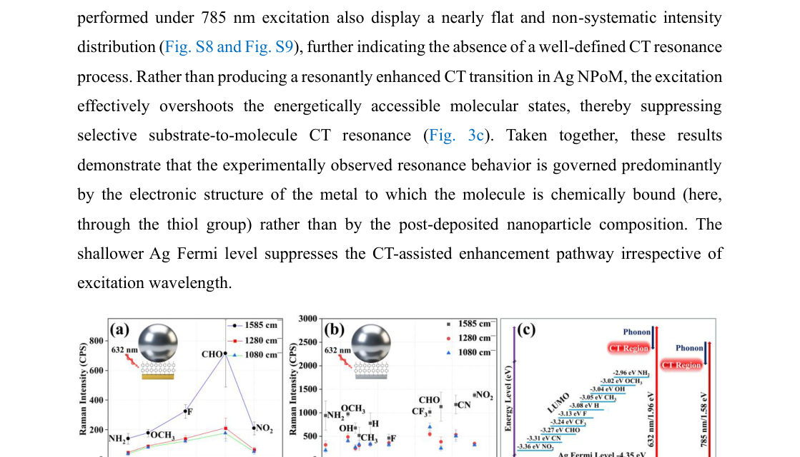
<figcaption class="paper-figure-caption"><b>Fig 3.</b> Fig. 3 (a) Correlation of calculated molecular LUMO energies with SERS intensities from Au-</figcaption>
</figure>
<figure class="paper-figure-card">
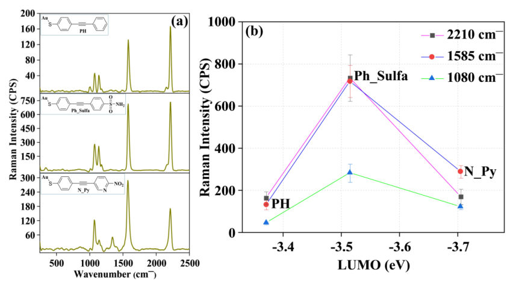
<figcaption class="paper-figure-caption"><b>Fig 4.</b> Fig. 4 (a) SERS spectra of PH, Ph_Sulfa, and N_Py assembled in Au NPoM junctions under</figcaption>
</figure>
<figure class="paper-figure-card">
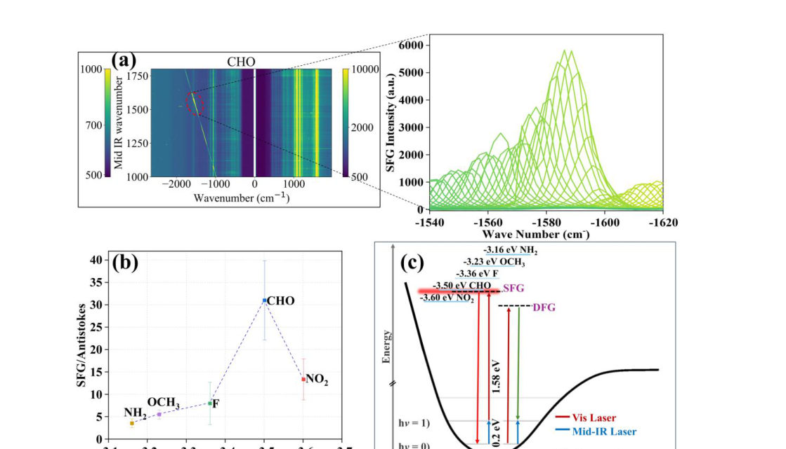
<figcaption class="paper-figure-caption"><b>Fig 5.</b> Fig. 5 (a) Mid-IR-scanned emission maps from Au NPoS cavities containing the representative</figcaption>
</figure>
</div>

<p><strong>Summary.</strong> This paper investigates the mechanism behind signal enhancement in molecule-metal junctions using plasmonics. By systematically tuning the electronic structure of attached molecules, the authors demonstrate that the enhancement is governed by a precise charge-transfer resonance condition dependent on both the metal work function and the excitation light energy. This provides an experimentally accessible framework for engineering molecular plasmonic devices.</p>
<p><strong>Why it may be interesting.</strong> This work directly bridges concepts from quantum optics and open quantum systems by quantifying how external electromagnetic fields (plasmons) couple to molecular electronic states via resonant charge transfer pathways. The identification of specific resonance conditions provides a quantitative tool for designing molecular plasmonic devices.</p>
<details>
<summary>Detailed structure</summary>
<p><strong>Main problem.</strong> The study addresses the poorly understood energetic conditions governing charge-transfer resonance within molecule-metal nanocavities, which is critical for plasmon-enhanced spectroscopy.</p>
<p><strong>Main result.</strong> The research establishes that charge-transfer enhancement in SERS and vSFG is governed by a well-defined interfacial resonance condition dependent on both the substrate work function and the excitation energy.</p>
<p><strong>Method.</strong> The authors combine experimental techniques (SERS, vSFG) with theoretical calculations (DFT) to probe molecular electronic structure changes across systematically varied molecular libraries.</p>
<p><strong>Model / system.</strong> The physical system involves plasmonic nanoparticle-on-mirror junctions incorporating engineered biphenylthiol derivatives monolayers. The investigation focuses on tuning the Lowest Unoccupied Molecular Orbital (LUMO) energy of these molecules relative to the metal substrate's electronic levels.</p>
<p><strong>Key observables.</strong> Raman/SERS intensity variations, vibrational fingerprints, and the correlation between enhancement magnitude and LUMO alignment.</p>
<p><strong>Important parameters / regimes.</strong> Substrate work function, excitation energy ($   ext{e.g., } 632     ext{ nm vs. } 785   ext{ nm}$), and the molecular LUMO energy level.</p>
<p><strong>Assumptions / limitations.</strong> The study assumes that by varying substituents while keeping the anchoring geometry constant, electronic structure variations can be isolated from structural heterogeneity effects.</p>
<p><strong>Figures summary.</strong> Figures illustrate schematic charge transfer processes in Au NPoM junctions and show SERS spectra correlating intensity changes with LUMO energy under different excitation wavelengths.</p>
<p><strong>Paper structure.</strong> The paper progresses by first identifying the core problem, then detailing the experimental setup using molecular libraries on plasmonic substrates. It presents spectroscopic evidence showing resonance dependence on wavelength (632 nm vs 785 nm), confirming a charge-transfer mechanism, and concludes by establishing an engineering framework for these junctions.</p>
</details>
<details>
<summary>Abstract</summary>
<p>Interfacial charge-transfer processes play a critical role in plasmon-enhanced spectroscopy, yet the energetic conditions governing charge-transfer resonance within molecule-metal nanocavities remain poorly understood. Here, plasmonic nanoparticle-on-mirror junctions incorporating systematically engineered biphenylthiol derivatives monolayers were used to investigate how frontier orbital alignment influences chemical enhancement mechanisms. A molecular library spanning a broad range of electronically tuned acceptor states was examined using surface-enhanced Raman scattering (SERS), vibrational sum frequency generation (vSFG) spectroscopy, and density functional theory calculations. By combining different excitation wavelengths with controlled variation of substrate composition and molecular electronic structure, the energetic relationship between plasmon-enhanced charge transfer excitation and molecular orbital alignment was quantitatively evaluated. The results reveal that charge-transfer enhancement of Raman scattering is governed by a well-defined interfacial resonance condition dependent on substrate work function and excitation energy. We further probe a subset of molecular-metal systems by nanocavity-enhanced vSFG and identify the same resonance conditions as in SERS, consistent with expectations. These findings establish an experimentally accessible framework for probing and engineering charge-transfer processes in plasmonic molecular junctions and provide mechanistic insight relevant to molecular plasmonics, charge carrier photophysics, and nanoscale interfacial spectroscopy.</p>
</details>
<p><sub><a href="#top">↑ back to top</a></sub></p>

<p><a id="paper-2607.09178"></a></p>
<h3 id="tunable-responsivity-and-bandwidth-in-microwave-kinetic-inductance-detectors-via-readout-current-nonlinearity"><a href="http://arxiv.org/abs/2607.09178v1">Tunable responsivity and bandwidth in microwave kinetic inductance detectors via readout current nonlinearity</a></h3>
<p><strong>Authors:</strong> Maclean Rouble, Peter Day, Matt Dobbs, Joshua Montgomery, Sofiia Savchyn, Graeme Smecher<br>
<strong>Type:</strong> both · <strong>Category:</strong> other · <strong>PDF:</strong> <a href="https://arxiv.org/pdf/2607.09178v1">https://arxiv.org/pdf/2607.09178v1</a><br>
<strong>Analysis basis:</strong> full PDF text, analyzed in chunks
<strong>Topic relevance:</strong> <code>Keldysh / 2PI / non-Gaussian methods</code> <strong>3/5</strong> · <code>driven-dissipative phase transition</code> <strong>3/5</strong> · <code>methods for driven-dissipative</code> <strong>3/5</strong> · <code>Tavis-Cummings &amp; cavity-many-emitter</code> <strong>2/5</strong> · <code>non-equilibrium universality</code> <strong>2/5</strong> · <code>correlated cavity matter</code> <strong>1/5</strong> · <code>non-equilibrium dynamics</code> <strong>1/5</strong> · <code>quantum optics experiment</code> <strong>1/5</strong></p>
<div class="figure-strip-hint">↔ Scroll figures horizontally</div>
<div class="paper-figures-scroll">
<figure class="paper-figure-card">
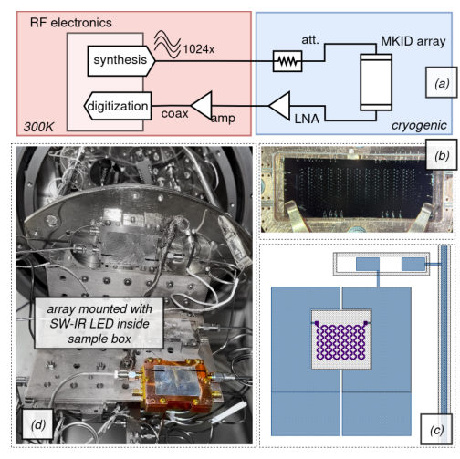
<figcaption class="paper-figure-caption"><b>Fig 1.</b> FIG. 1. Experimental configuration used in the study of driven nonlinear resonator operating states. (a) Schematic overview of the microwave readout chain: RF synthesis and digitization of generator tones is provided by a Control &amp; Readout System (CRS) board.[18] Attenuation and amplifi- cation stages condition the tones before and after the MKID array, respectively. The array is cooled to 100mK within a BlueFors LD250S dilution refrigerator. The frequency and power of each individual generator tone define the experi- mental control coordinates used throughout this work. (b) Photograph of a mounted MKID array. A variety of res- onator geometries and materials were studied for this work,...</figcaption>
</figure>
<figure class="paper-figure-card">
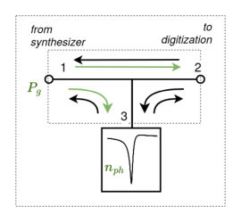
<figcaption class="paper-figure-caption"><b>Fig 2.</b> FIG. 2. Schematic representation of the side-coupled res- onator model. The generator tone enters port 1 with power Pg, the transmitted signal (S21) is measured at port 2, and port 3 couples the generator to the resonator mode with photon occupation nph. The three-port network maps the feedline-coupled resonator to the one-port Kerr-cavity input- output model used to describe the nonlinear state. The ar- rows illustrate the three-port scattering matrix, with the ones relevant for this discussion highlighted in green.</figcaption>
</figure>
<figure class="paper-figure-card">
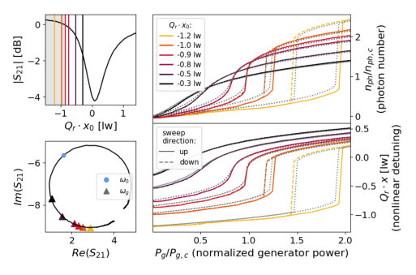
<figcaption class="paper-figure-caption"><b>Fig 3.</b> FIG. 3. Measured response of a resonator to generator power sweeps, performed at a selection of generator frequency off- sets, x0 (here scaled by Qr to express the offset in units of linewidths), from the undriven resonance. The left panels illustrate the setup of each power sweep, overlaid on a low- power S21 frequency sweep of the same resonator. The right column shows the response of the resonator to the power sweep when the readout tone is fixed at each value of x0, in terms of its nonlinear resonant frequency shift x and the average number of photons in the resonant cavity nph (top) and nonlinear detuning x (bottom). For values of x0 where the generator is located close to the undriven...</figcaption>
</figure>
<figure class="paper-figure-card">
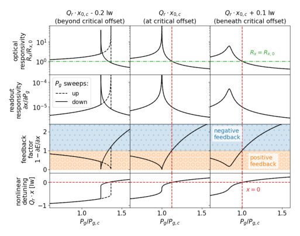
<figcaption class="paper-figure-caption"><b>Fig 4.</b> FIG. 4. Calculated responsivity to optical load (Eq. 18), readout (constant-load limit of Eq. 14), the feedback factor, and the nonlinear detuning, as a function of generator power, for three values of x0 beyond (left), at (centre), and beneath (right) the critical offset frequency. The optical responsivity (top row) and the readout responsivity (second row) are both maximized where the feedback factor (third row) is closest to zero. The feedback factor enhances the response for x &lt; 0 (orange dotted region) and suppresses it for x &gt; 0 (blue circles region); the optical responsivity is enhanced and suppressed in these regions respectively. The ratio of this resonator’s reactive to...</figcaption>
</figure>
<figure class="paper-figure-card">
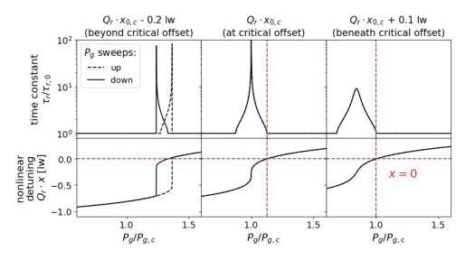
<figcaption class="paper-figure-caption"><b>Fig 5.</b> FIG. 5. Driven resonator relaxation time during fixed- frequency power sweeps, for generator offsets beyond, at, and within the critical offset x0,c. The relaxation time remains nearly constant and equal to the undriven resonator ring time, τr,0, except near the critical point, where the slow eigenvalue becomes small and τr increases sharply. For x0 beyond the critical value, the response is branch dependent because the power sweep is hysteretic.</figcaption>
</figure>
</div>

<p><strong>Summary.</strong> This paper investigates using the inherent nonlinearity in Microwave Kinetic Inductance Detectors (MKIDs) as a controllable resource. By tuning the readout power near resonance bifurcation points, the authors achieve significant enhancements in detector responsivity. This work is crucial for improving cryogenic sensor sensitivity by mastering nonlinear operational regimes.</p>
<p><strong>Why it may be interesting.</strong> This work provides an excellent example of how nonlinear classical physics (bifurcation theory) can be applied to enhance the sensitivity of quantum-limited detectors, drawing parallels between driven resonator dynamics and open quantum system response functions.</p>
<details>
<summary>Detailed structure</summary>
<p><strong>Main problem.</strong> The research aims to utilize the inherent nonlinearity of Microwave Kinetic Inductance Detectors (MKIDs) by controlling the readout current to achieve tunable responsivity and bandwidth enhancement.</p>
<p><strong>Main result.</strong> By operating near the resonator's bifurcation point, a factor of 10 enhancement in optical response was demonstrated, although this comes at the cost of reduced bandwidth.</p>
<p><strong>Method.</strong> The authors developed a theoretical framework based on analyzing the nonlinear steady-state response of the driven resonator, complemented by experimental measurements of noise spectra under varying bias conditions.</p>
<p><strong>Model / system.</strong> The system is an MKID array composed of superconducting resonators whose kinetic inductance depends nonlinearly on the circulating microwave current. The physics is modeled using a coupled optical cavity approach describing the steady-state photon number balance.</p>
<p><strong>Key observables.</strong> Responsivity (both optical and microwave), bandwidth, resonant frequency shift ($\delta x$), and noise spectrum characteristics (white noise level, roll-off frequency).</p>
<p><strong>Important parameters / regimes.</strong> Readout power ($P_g$), detuning ($x_0$), quality factors ($Q_r, Q_c$), and the nonlinear current scale ($I^*$).</p>
<p><strong>Assumptions / limitations.</strong> The analysis simplifies by focusing on reactive inductance changes ($\delta L_k \propto I^2$) while ignoring pair-breaking energy effects. The system is modeled as a one-port optical cavity coupled to a three-port network.</p>
<p><strong>Figures summary.</strong> Figures illustrate the experimental setup, power sweep responses showing bistability/hysteresis near bifurcation points, and noise spectra confirming enhanced white noise levels and reduced roll-off frequency with increased nonlinear bias.</p>
<p><strong>Paper structure.</strong> The paper progresses from establishing MKIDs' nonlinearity as a resource, developing the theoretical model for controlled operation via $(x_0, P_g)$, demonstrating responsivity enhancement through bifurcation analysis, and finally validating these effects by analyzing noise spectra changes.</p>
</details>
<details>
<summary>Abstract</summary>
<p>Microwave kinetic inductance detectors (MKIDs) are generally read out with microwave readout tones of high enough amplitude to adequately suppress the noise contribution of the first-stage amplifier. At high readout power, the detector's resonant frequency is altered as a result of the dependence of the kinetic inductance on the internally circulating microwave current. With the tone placed below the resonant frequency, the nonlinear frequency shift results in a positive feedback effect that can significantly enhance the responsivity of the detector, to both optical and microwave power. We report a factor of 10 enhancement in optical response by tuning the readout power and frequency to close to the resonator's bifurcation point. A corresponding decrease in the bandwidth of the resonator is observed under these conditions. We show that the strength of the feedback effect can be easily selected by adjusting the excitation, and provide a map of possible operational states to do so. Operation of MKIDs in this mode could be used to improve sensitivity when non-intrinsic noise sources are significant.</p>
</details>
<p><sub><a href="#top">↑ back to top</a></sub></p>

<p><a id="paper-2607.09019"></a></p>
<h3 id="a-new-perspective-on-the-anomalous-hall-effect"><a href="http://arxiv.org/abs/2607.09019v1">A new perspective on the anomalous Hall effect</a></h3>
<p><strong>Authors:</strong> Jason G. Kattan, Matthew Albert, J. E. Sipe<br>
<strong>Type:</strong> theory · <strong>Category:</strong> other · <strong>PDF:</strong> <a href="https://arxiv.org/pdf/2607.09019v1">https://arxiv.org/pdf/2607.09019v1</a><br>
<strong>Analysis basis:</strong> full PDF text, analyzed in chunks
<strong>Topic relevance:</strong> <code>Keldysh / 2PI / non-Gaussian methods</code> <strong>3/5</strong> · <code>methods for driven-dissipative</code> <strong>3/5</strong> · <code>driven-dissipative phase transition</code> <strong>2/5</strong> · <code>non-equilibrium dynamics</code> <strong>2/5</strong> · <code>non-equilibrium universality</code> <strong>2/5</strong> · <code>analog quantum simulation</code> <strong>1/5</strong> · <code>exotic spin models in light-matter</code> <strong>1/5</strong> · <code>spintronics-quantum-optics interface</code> <strong>1/5</strong></p>
<div class="figure-strip-hint">↔ Scroll figures horizontally</div>
<div class="paper-figures-scroll">
<figure class="paper-figure-card">
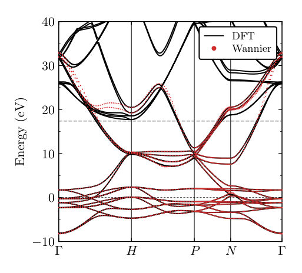
<figcaption class="paper-figure-caption"><b>Fig 1.</b> FIG. 1. The ab initio and Wannier-interpolated band struc- ture of bcc iron along high-symmetry path, in close agreement with X. Wang et al. [41]. The Fermi energy is centered at 0 eV, and the horizontal dashed line at 17.37 eV denotes the frozen energy window maximum used in the disentanglement step in the Wannier construction.</figcaption>
</figure>
<figure class="paper-figure-card">
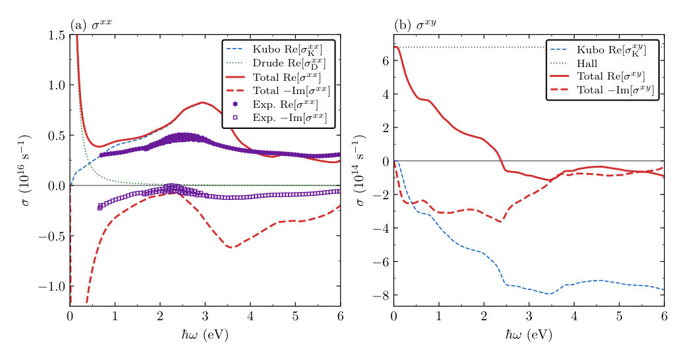
<figcaption class="paper-figure-caption"><b>Fig 2.</b> FIG. 2. The frequency-dependent total conductivity of bcc iron along the (a) longitudinal and (b) transverse directions, which includes the sum of the Hall, Drude, and Kubo conductivity tensors. The experimental measurements of the optical conductivity of iron from Johnson and Christy are shown in (a) in purple at room temperature [31].</figcaption>
</figure>
</div>

<p><strong>Summary.</strong> This theoretical work develops a microscopic formalism to analyze the anomalous Hall effect and general optical response in magnetic conductors at finite frequencies. By treating electronic degrees of freedom via second-quantized field theory, the authors decompose the conductivity tensor into three physically distinct parts: polarization (Kubo), Drude, and anomalous Hall contributions. This provides a unified dynamic picture for charge transport beyond static DC measurements.</p>
<p><strong>Why it may be interesting.</strong> While focused on condensed matter transport, the decomposition of conductivity into fundamental responses (polarization vs. free current) provides a rigorous framework for understanding linear response in magnetically ordered systems, which has parallels to open quantum system descriptions.</p>
<details>
<summary>Detailed structure</summary>
<p><strong>Main problem.</strong> The paper revisits the anomalous Hall effect (AHE) in magnetic conductors, generalizing its study to finite frequencies using a microscopic formalism.</p>
<p><strong>Main result.</strong> The long-wavelength conductivity tensor is shown to be a sum of three distinct contributions: a Kubo term from polarization response, and two terms (Drude and anomalous Hall) from the free current response.</p>
<p><strong>Method.</strong> The analysis employs second-quantized field theory, decomposing charge/current into microscopic polarization, magnetization, and free components derived via lattice gauge theory concepts.</p>
<p><strong>Model / system.</strong> The system is magnetic conductors with long-range magnetic order, modeled using an electronic Hamiltonian incorporating a static, cell-periodic magnetic field that breaks time-reversal symmetry. Calculations are performed for the bcc phase of iron.</p>
<p><strong>Key observables.</strong> Long-wavelength conductivity tensor $\sigma(\omega)$, polarization ($\mathbf{P}$), magnetization ($\mathbf{M}$), and free charge/current densities ($
ho_F, \mathbf{j}_F$).</p>
<p><strong>Important parameters / regimes.</strong> Finite frequency ($\omega$), magnetic field strength (encoded in the Hamiltonian), and characteristic length scales ($\Delta$ for spatial averaging).</p>
<p><strong>Assumptions / limitations.</strong> The analysis uses a frozen-ion approximation ($\Gamma$ fixed) and relies on long-wavelength approximations.</p>
<p><strong>Figures summary.</strong> Not specified by notes, but calculations are presented for iron's bcc phase showing frequency dependence of conductivity contributions.</p>
<p><strong>Paper structure.</strong> The paper builds the formalism by defining microscopic quantities (polarization, magnetization) and then derives the macroscopic response ($\sigma(\omega)$) by combining three distinct theoretical terms: Kubo, Drude, and anomalous Hall components.</p>
</details>
<details>
<summary>Abstract</summary>
<p>We revisit the anomalous Hall effect in magnetic conductors, and its generalization to finite frequencies, using a formalism based on microscopic notions of polarization, magnetization, and free charges and currents. The electronic degrees of freedom are treated within second-quantized field theory, where the Hamiltonian features a static and cell-periodic magnetic field that encodes the magnetic order in the crystal and breaks time-reversal symmetry. We study the dynamics of bound and free charge carriers at the microscopic level as they respond to a spatially uniform electric field at finite frequency. The conductivity tensor describing the long-wavelength response is a sum of three terms, including a Kubo term associated with the polarization response, along with the metallic Drude term and the anomalous Hall conductivity that are associated with the longitudinal and transverse parts of the free current response, respectively. We also present numerical calculations of these contributions for the ferromagnetic body-centered cubic phase of iron.</p>
</details>
<p><sub><a href="#top">↑ back to top</a></sub></p>

<p><a id="paper-2607.09468"></a></p>
<h3 id="neutron-contribution-to-the-force-on-a-proton-vortex-in-superconducting-neutron-star-matter"><a href="http://arxiv.org/abs/2607.09468v1">Neutron contribution to the force on a proton vortex in superconducting neutron-star matter</a></h3>
<p><strong>Authors:</strong> Oleg A. Goglichidze, Mikhail E. Gusakov<br>
<strong>Type:</strong> theory · <strong>Category:</strong> other · <strong>PDF:</strong> <a href="https://arxiv.org/pdf/2607.09468v1">https://arxiv.org/pdf/2607.09468v1</a><br>
<strong>Analysis basis:</strong> full PDF text, analyzed in chunks
<strong>Topic relevance:</strong> <code>Keldysh / 2PI / non-Gaussian methods</code> <strong>3/5</strong> · <code>non-equilibrium dynamics</code> <strong>3/5</strong> · <code>driven-dissipative phase transition</code> <strong>1/5</strong> · <code>methods for driven-dissipative</code> <strong>1/5</strong> · <code>non-equilibrium universality</code> <strong>1/5</strong></p>
<div class="figure-strip-hint">↔ Scroll figures horizontally</div>
<div class="paper-figures-scroll">
<figure class="paper-figure-card">
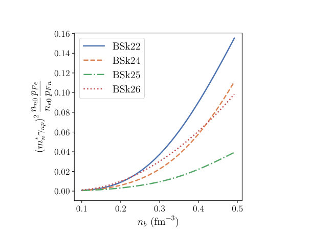
<figcaption class="paper-figure-caption"><b>Fig 1.</b> FIG. 1. The quantity (m∗ nγnp)2(nn0/ne0)(pF e/pF n) plotted as a function of baryon number density nb for the BSk family of equations of state. The Landau parameters are calculated as described in Ref. [23].</figcaption>
</figure>
</div>

<p><strong>Summary.</strong> This paper calculates the force acting on a proton vortex embedded in superconducting neutron star material. It specifically derives and quantifies a previously uncounted longitudinal force component arising from normal neutrons interacting via Fermi-liquid coupling with superconducting protons. This work advances our understanding of vortex dynamics in compact objects by incorporating these subtle quantum mechanical interactions.</p>
<p><strong>Why it may be interesting.</strong> The application of Fermi-liquid theory to determine transport forces in extreme astrophysical environments like neutron stars provides a rich example of non-equilibrium many-body physics relevant to dense matter dynamics.</p>
<details>
<summary>Detailed structure</summary>
<p><strong>Main problem.</strong> The study investigates the additional force exerted on a proton vortex within superconducting neutron-star matter due to interactions with normal neutrons.</p>
<p><strong>Main result.</strong> Normal neutrons contribute a new longitudinal force component to the vortex force, which is proportional to the relative neutron-vortex velocity and vanishes without Fermi-liquid coupling.</p>
<p><strong>Method.</strong> The analysis employs a kinetic approach derived from Landau Fermi-liquid theory applied to the neutron-proton subsystem interactions.</p>
<p><strong>Model / system.</strong> The system modeled is dense matter inside a neutron star, comprising superconducting protons, normal neutrons, and electrons. The physics involves type-II superconductivity characterized by magnetic vortices.</p>
<p><strong>Key observables.</strong> Total force on the vortex ($F_{m	o v}$), which is expected to be longitudinal and velocity-dependent.</p>
<p><strong>Important parameters / regimes.</strong> Temperature relative to critical temperatures ($T_{cn} < T < T_{cp}$); characteristic length scales like coherence length ($\xi$) and London penetration depth ($\lambda$).</p>
<p><strong>Assumptions / limitations.</strong> Protons are superconducting while neutrons are normal; the vortex core is treated as infinitely thin, and quasiparticle collisions are neglected.</p>
<p><strong>Paper structure.</strong> The paper develops the force calculation by analyzing momentum conservation laws ($\partial P_i / \partial t + \partial \Pi_{ik} / \partial r_k = ...$) and decomposing the total force into contributions from different particle species, culminating in the derivation of the neutron contribution $\mathbf{F}^{(np)}_i$.</p>
</details>
<details>
<summary>Abstract</summary>
<p>We investigate the forces acting on a proton vortex in superconducting neutron-star matter composed of neutrons, protons, and electrons, accounting for Fermi-liquid interactions in the neutron-proton subsystem. While the force arising from electron scattering by the vortex magnetic field is well known, we demonstrate that normal neutrons also exert a force on proton vortices due to Fermi-liquid coupling with superconducting protons. Using a kinetic approach based on Landau Fermi-liquid theory, we show that neutron quasiparticles scatter off a proton vortex through the spatially varying condensate momentum, giving rise to a longitudinal force proportional to the relative neutron-vortex velocity. In contrast to the electron contribution, this force has no transverse component and vanishes in the absence of neutron-proton Fermi-liquid interaction. Within a simple model, we analyze the main properties of this force and provide physically motivated estimates of its magnitude.</p>
</details>
<p><sub><a href="#top">↑ back to top</a></sub></p>

<p><a id="paper-2607.08926"></a></p>
<h3 id="interface-induced-spin-resolved-type-ii-band-alignment-and-enhanced-magnetic-anisotropy-in-mse2wte2-m-v-cr-mn-fe-and-co-van-der-waals-heterobilayers"><a href="http://arxiv.org/abs/2607.08926v1">Interface-induced spin-resolved type-II band alignment and enhanced magnetic anisotropy in MSe2/WTe2 (M = V, Cr, Mn, Fe and Co) van der Waals heterobilayers</a></h3>
<p><strong>Authors:</strong> Paras Poswal, Ranjit Pati, Neeraj Shukla<br>
<strong>Type:</strong> theory · <strong>Category:</strong> other · <strong>PDF:</strong> <a href="https://arxiv.org/pdf/2607.08926v1">https://arxiv.org/pdf/2607.08926v1</a><br>
<strong>Analysis basis:</strong> full PDF text, analyzed in chunks
<strong>Topic relevance:</strong> <code>spintronics-quantum-optics interface</code> <strong>3/5</strong> · <code>Keldysh / 2PI / non-Gaussian methods</code> <strong>1/5</strong> · <code>Kondo &amp; dissipative impurity</code> <strong>1/5</strong> · <code>analog quantum simulation</code> <strong>1/5</strong> · <code>methods for driven-dissipative</code> <strong>1/5</strong> · <code>non-equilibrium dynamics</code> <strong>1/5</strong></p>
<div class="figure-strip-hint">↔ Scroll figures horizontally</div>
<div class="paper-figures-scroll">
<figure class="paper-figure-card">
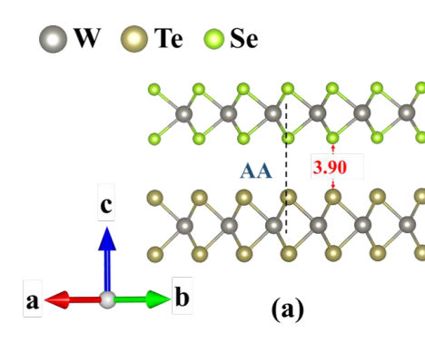
<figcaption class="paper-figure-caption"><b>Fig 1.</b> FIG 1. Stacking sequences of WSe2/WTe2 hetrobilayer (a) AA configuration, (b) AAʹ configuration magnetic atoms to minimize the finite size effects. The Metropolis Monte Carlo algorithum [28] has been considered to find out the temperature dependent magnetic properties. For each temperature, the system has been first equilibrated for 10,000 Monte Carlo steps, followed by an average run of 5,000 Monte Carlo steps.</figcaption>
</figure>
<figure class="paper-figure-card">
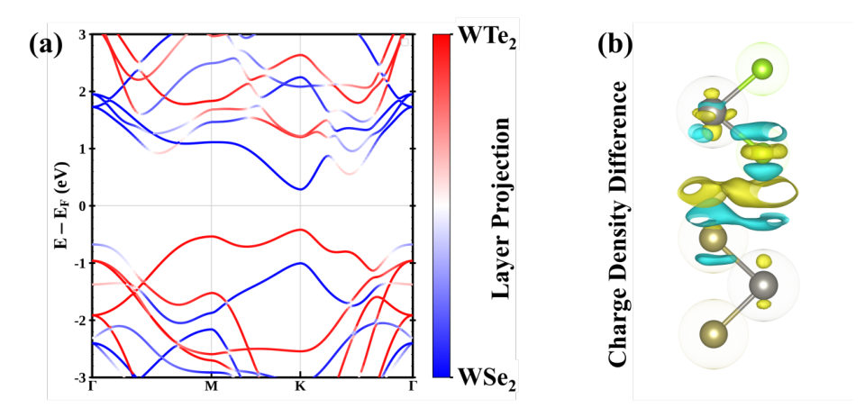
<figcaption class="paper-figure-caption"><b>Fig 2.</b> FIG 2. (a) Projected band structure and (b) Charge density difference isosurface of WSe2/WTe2 hetrobilayer (AAʹ configuration)</figcaption>
</figure>
<figure class="paper-figure-card">
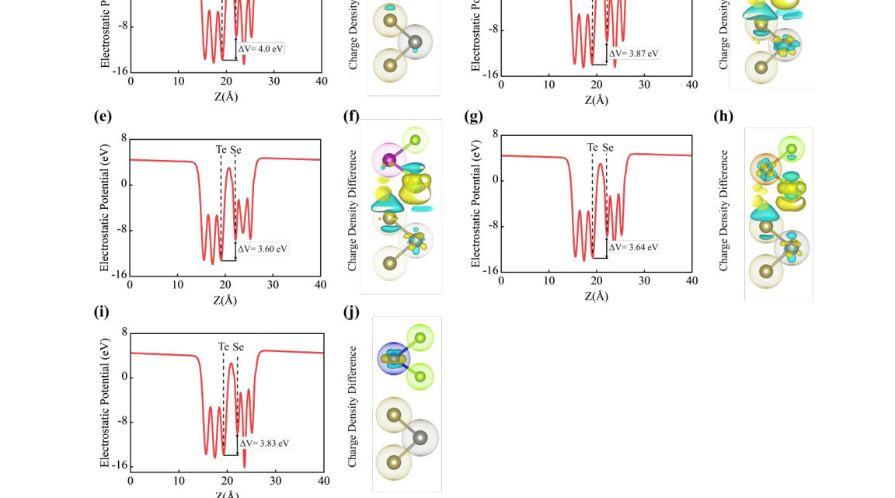
<figcaption class="paper-figure-caption"><b>Fig 3.</b> FIG 3. Planar average electrostatic potential profile and charge density difference of (a) and (b) VSe2/WTe2, (c) and (d) CrSe2/WTe2, (e) and (f) MnSe2/WTe2, (g) and (h) FeSe2/WTe2, and (i) and (j) CoSe2/WTe2 hetrobilayer Table I. The Hubbard Value U, Formation energy per atom (Ef) and magnetic moment (M) of MSe2/WTe2 hetrobilayer.</figcaption>
</figure>
<figure class="paper-figure-card">
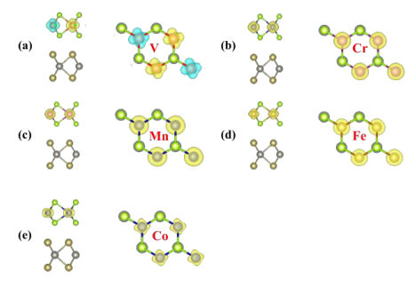
<figcaption class="paper-figure-caption"><b>Fig 4.</b> FIG 4. Spin density (ρup – ρdown) isosurface for (a) VSe2/WTe2, (b) CrSe2/WTe2, (c) MnSe2/WTe2, (d) FeSe2/WTe2, and (e) CoSe2/WTe2 hetrobilayer structure having isosurface value 0.042. A systematic comparison of the ferromagnetic (FM) and antiferromagnetic (AFM) configurations reveals that VSe2/WTe2 is antiferromagnetic where CrMSe2/WTe2, MSe2/WTe2, FeSe2/WTe2, and CoSe2/WTe2 exhibits ferromagnetic ground state. Fig. 4 exhibits the spin density difference isosurface (ρup – ρdown) of MSe2/WTe2 heterobilayer. The yellow and blue isosurface represent the excess of spin-up and spin-down population, respectively. The localization of spin density around the 3d transition metal atom reveals that...</figcaption>
</figure>
<figure class="paper-figure-card">
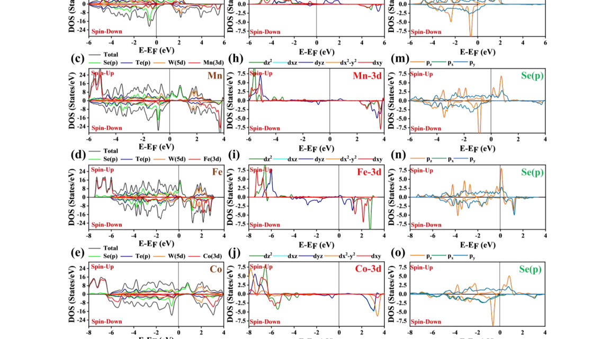
<figcaption class="paper-figure-caption"><b>Fig 5.</b> FIG 5. Partial Density of States (PDOS) of (a) VSe2/WTe2, (b) CrSe2/WTe2, (c) MnSe2/WTe2, (d) FeSe2/WTe2, and (e) CoSe2/WTe2 hetrobilayer 2×2×1 supercell with orbital-resolved PDOS of (f-j) 3d of transition metal atom and (k- o) 4p of Se. which represent metallic behaviors of these systems, Fig. S5(a), (b) and (c). In contrast, MnSe2/WTe2 and FeSe2/WTe2 hetrobilayer exhibit spin dependence electronic behavior. In these systems, spin-up bands cross the Fermi level whereas the spin-down’s valence band and conduction band exhibit the band gap of 0.94 eV and 0.37 eV, for MnSe2/WTe2 and FeSe2/WTe2 respectively, thereby establishing half-metallic ferromagnetic ground states.</figcaption>
</figure>
</div>

<p><strong>Summary.</strong> This work theoretically investigates $ ext{MSe}_2/ ext{WTe}_2$ van der Waals heterobilayers to engineer next-generation spintronic materials. By substituting W with various 3d metals, the researchers demonstrate that interface formation induces favorable type-II band alignment and dramatically enhances perpendicular magnetic anisotropy. The findings establish these heterostructures as promising candidates for low-dimensional electronic and magnetic devices.</p>
<p><strong>Why it may be interesting.</strong> While focused on condensed matter magnetism and electronics, the detailed theoretical modeling of interfacial coupling mechanisms—which dictate emergent quantum phenomena like spin-selectivity and enhanced anisotropy—is highly relevant to understanding engineered quantum interfaces.</p>
<details>
<summary>Detailed structure</summary>
<p><strong>Main problem.</strong> The study investigates how interface engineering in van der Waals heterobilayers can enhance electronic properties, specifically achieving spin-resolved type-II band alignment and robust perpendicular magnetic anisotropy for spintronic applications.</p>
<p><strong>Main result.</strong> The $  ext{MSe}_2/ ext{WTe}_2$ heterobilayers exhibit significant improvements upon interface formation, with $    ext{FeSe}_2/    ext{WTe}_2$ showing simultaneous half-metallicity, type-II alignment, and enhanced magnetic anisotropy.</p>
<p><strong>Method.</strong> The research employs first-principles Density Functional Theory (DFT) calculations, supplemented by methods to calculate Magnetic Anisotropy Energy (MAE) and model finite-temperature magnetism using Monte Carlo simulations.</p>
<p><strong>Model / system.</strong> The physical system is the $    ext{MSe}_2/ ext{WTe}_2$ van der Waals heterobilayer, where M is a 3d transition metal ($    ext{V},     ext{Cr},    ext{Mn},    ext{Fe},    ext{Co}$). The analysis focuses on structural stability, electronic band structure, and magnetic coupling across the heterointerface.</p>
<p><strong>Key observables.</strong> Type-II band gap (e.g., 0.70 eV), half-metallicity, Perpendicular Magnetic Anisotropy Energy (MAE), Curie Temperature ($T_C$), and built-in electric fields.</p>
<p><strong>Important parameters / regimes.</strong> The study compares various transition metals (V to Co) and stacking configurations ($   ext{AA}'$ preferred). Key energy scales include MAE values (e.g., $20.8 	ext{ meV}$ for $ ext{MnSe}_2$).</p>
<p><strong>Assumptions / limitations.</strong> Calculations rely on DFT approximations (GGA+U), and magnetic behavior at finite temperatures is modeled using classical Heisenberg Hamiltonians.</p>
<p><strong>Figures summary.</strong> Figures illustrate stacking sequences, band structures showing type-II alignment, charge density redistribution profiles indicating built-in fields, and angular dependence of MAE.</p>
<p><strong>Paper structure.</strong> The paper systematically analyzes the structural stability, electronic properties (band alignment/charge transfer), and magnetic anisotropy enhancement across different $ ext{M}$ substitutions in the heterobilayer system.</p>
</details>
<details>
<summary>Abstract</summary>
<p>Two-dimensional van der Waals heterobilayers provide an attractive platform for the development of next-generation spintronic devices. Here, first-principles calculations are performed to investigate the structural, electronic and magnetic properties of MSe2/WTe2 (M = V, Cr, Mn, Fe, and Co) van der Waals heterobilayers. The pristine WSe2/WTe2 heterobilayer in AA'-configuration is found to be energetically favorable and exhibits type-II band alignment with a band gap of 0.70 eV, and this provides an ideal platform for controlling carrier transport. Substituting W with 3d transition metal atoms, induces long-range magnetic ordering and reconstructs the spin-resolved electronic band structure. The formation of the heterointerface generates pronounced charge redistribution and an intrinsic built-in electric field, leading to interface-induced electronic reconstruction. MnSe2/WTe2 heterobilayer exhibits half-metallicity, whereas FeSe2/WTe2 heterobilayer simultaneously exhibits half-metallicity and spin-resolved type-II band alignment. Interfacial electronic reconstruction further produces a substantial perpendicular magnetic anisotropy, driving MnSe2 from an in-plane easy axis with MAE value of 1.10 meV in the isolated monolayer to a robust out-of-plane easy axis with MAE value of 20.8 meV in the heterobilayer. Among all the structures, CoSe2/WTe2 heterobilayer exhibits maximum Curie temperature (273.87 K). The combined results establish that interface engineering makes MSe2/WTe2 heterobilayers as a promising candidates for next-generation low-dimensional spintronic applications.</p>
</details>
<p><sub><a href="#top">↑ back to top</a></sub></p>

<p><a id="paper-2607.08922"></a></p>
<h3 id="seeing-inside-a-plasmonic-nanogap-few-molecule-orientation-and-preferential-adsorption"><a href="http://arxiv.org/abs/2607.08922v1">Seeing inside a Plasmonic Nanogap: Few-molecule Orientation and Preferential Adsorption</a></h3>
<p><strong>Authors:</strong> Francesco Ciccarello, Nobuaki Oyamada, Thwahira Shirin Alampara, Konstantin Malchow, Christophe Galland<br>
<strong>Type:</strong> experiment · <strong>Category:</strong> other · <strong>PDF:</strong> <a href="https://arxiv.org/pdf/2607.08922v1">https://arxiv.org/pdf/2607.08922v1</a><br>
<strong>Analysis basis:</strong> full PDF text, analyzed in chunks
<strong>Topic relevance:</strong> <code>correlated cavity matter</code> <strong>2/5</strong> · <code>quantum optics experiment</code> <strong>2/5</strong> · <code>Tavis-Cummings &amp; cavity-many-emitter</code> <strong>1/5</strong> · <code>interference shaping light</code> <strong>1/5</strong> · <code>quantum measurements</code> <strong>1/5</strong> · <code>spintronics-quantum-optics interface</code> <strong>1/5</strong></p>
<div class="figure-strip-hint">↔ Scroll figures horizontally</div>
<div class="paper-figures-scroll">
<figure class="paper-figure-card">
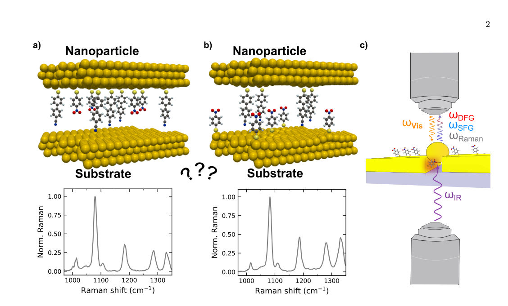
<figcaption class="paper-figure-caption"><b>Fig 1.</b> FIG. 1. (a) Sketch of a gold-molecule-gold nanogap with 4-cyanobiphenylthiol (CN-BPT) and 4-nitrophenylthiol (4NTP)</figcaption>
</figure>
<figure class="paper-figure-card">
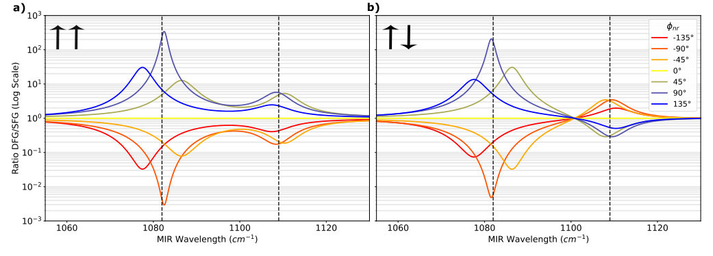
<figcaption class="paper-figure-caption"><b>Fig 2.</b> FIG. 2. (a) ϕNR dependence of simulated DFG/SFG ratio R(ω) for two vibrations which share the same phase offset ϕ1 = ϕ2 =</figcaption>
</figure>
<figure class="paper-figure-card">
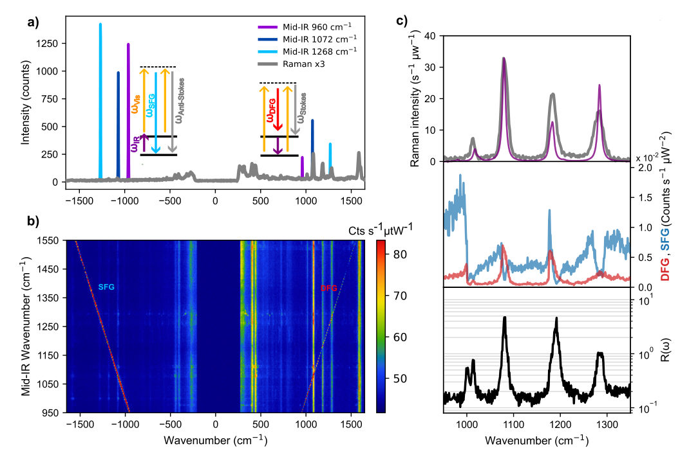
<figcaption class="paper-figure-caption"><b>Fig 3.</b> FIG. 3. (a) Emission spectra from a single CN-BPT SAM functionalized NPoS obtained at three different MIR frequencies</figcaption>
</figure>
<figure class="paper-figure-card">
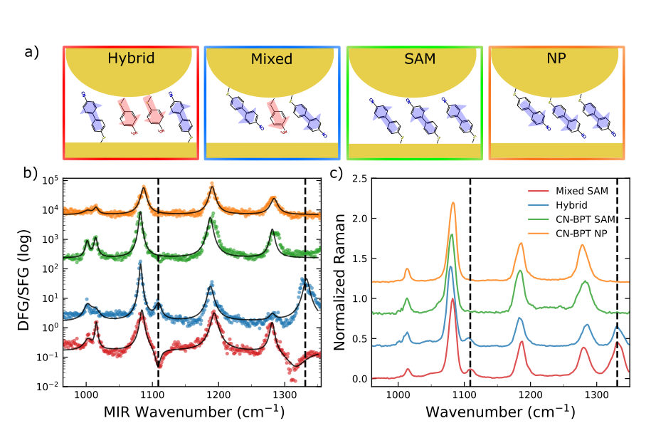
<figcaption class="paper-figure-caption"><b>Fig 4.</b> FIG. 4. (a) Sketch of the four molecular configurations described in the main text, with the color code used in the following</figcaption>
</figure>
<figure class="paper-figure-card">

<figcaption class="paper-figure-caption"><b>Fig 5.</b> FIG. 5. (a) Sketch of a nanogap formed onto a CN-BPT SAM and immersed in a 1 mM 4NTP ethanol solution for incubation.</figcaption>
</figure>
</div>

<p><strong>Summary.</strong> The paper presents plasmon-enhanced nonlinear vibrational spectroscopy as a novel technique to study molecules adsorbed inside metallic nanogaps. By measuring the ratio of sum-frequency generation to difference-frequency generation signals, researchers can unambiguously determine the relative orientation of molecules with few-molecule sensitivity. This method offers a powerful tool for molecular electronics and surface science.</p>
<p><strong>Why it may be interesting.</strong> This work provides a powerful spectroscopic tool for probing interfacial chemistry at the nanoscale, which is highly relevant to understanding quantum phenomena in molecular junctions and energy transfer processes at interfaces.</p>
<details>
<summary>Detailed structure</summary>
<p><strong>Main problem.</strong> The primary challenge is monitoring side-specific molecular interactions and determining relative molecular orientation within metallic nanogaps due to their buried nature.</p>
<p><strong>Main result.</strong> The authors successfully developed a method that determines molecular orientation and preferential binding sites with few-molecule sensitivity, revealing that the non-resonant electronic response is governed by molecule-surface interaction.</p>
<p><strong>Method.</strong> They introduce plasmon-enhanced nonlinear vibrational spectroscopy, utilizing simultaneous measurement of vibrational sum-frequency generation (vSFG) and difference-frequency generation (vDFG).</p>
<p><strong>Model / system.</strong> The experiment uses metallic nanogaps (e.g., gold-molecule-gold junctions) within a dual-resonant nanocavity setup, enabling the study of molecular adsorption on double interfaces.</p>
<p><strong>Key observables.</strong> The ratio $R(\omega) = |\chi^{(2)}_{	ext{eff}}(-\omega)|^2 / |\chi^{(2)}_{	ext{eff}}(+\omega)|$ is the key diagnostic observable used to infer molecular orientation ($\phi_j$).</p>
<p><strong>Important parameters / regimes.</strong> Few-molecule sensitivity, continuous-wave excitation, and the relative phase shift between adsorbed molecules (e.g., parallel vs. anti-parallel).</p>
<p><strong>Assumptions / limitations.</strong> The analysis relies on separating the total nonlinear response into resonant ($\chi^{(2)}_{	ext{Res}}$) and non-resonant ($\chi^{(2)}_{	ext{NR}}$) contributions to extract orientation information.</p>
<p><strong>Figures summary.</strong> Figures illustrate the experimental setup, model the dependence of the $R(\omega)$ ratio on molecular orientation (e.g., $\phi_j=0$ vs. $\phi_j=\pi$), and show monitoring of molecular infiltration dynamics.</p>
<p><strong>Paper structure.</strong> The paper introduces the technique by detailing the physical problem, presents the theoretical framework involving nonlinear susceptibility components, demonstrates its application to determine orientation using $R(\omega)$, and concludes with examples of monitoring diffusion/binding.</p>
</details>
<details>
<summary>Abstract</summary>
<p>Molecule-surface interactions are central to many research and technological areas, spanning from heterogeneous catalysis and polymer science to electrochemistry. Of particular relevance are metallic nanogaps used in molecular electronics and near-field spectroscopy. Due to the buried nature of these double interfaces, few methods exist to monitor side-specific interactions and relative molecular orientation inside the gap. In this work, we introduce plasmon-enhanced nonlinear vibrational spectroscopy as an efficient tool to investigate surface molecular adsorption within metallic nanojunctions. By exploiting simultaneous vibrational sum- and difference-frequency generation in dual-resonant nanocavities, we resolve molecular orientation and preferential binding to one of the two gold surfaces, with few-molecule sensitivity. We also discover that the non-resonant (electronic) second-order nonlinear response is not an intrinsic property of the metal surface, but is instead governed by the molecule-surface interaction. Our findings provide a powerful analytical tool, easily implementable as an add-on to Raman spectroscopy, thanks to commercially available mid-infrared quantum cascade lasers.</p>
</details>
<p><sub><a href="#top">↑ back to top</a></sub></p>

<p><a id="paper-2607.08825"></a></p>
<h3 id="quantum-oscillation-signatures-of-math771math-monopole-charge-in-nodal-ring-semimetals"><a href="http://arxiv.org/abs/2607.08825v1">Quantum Oscillation Signatures of $\mathbb{Z}_2$ Monopole Charge in Nodal-Ring Semimetals</a></h3>
<p><strong>Authors:</strong> Aravind Karthigeyan, Yoonseok Hwang, Bohm-Jung Yang, Junyeong Ahn<br>
<strong>Type:</strong> theory · <strong>Category:</strong> other · <strong>PDF:</strong> <a href="https://arxiv.org/pdf/2607.08825v1">https://arxiv.org/pdf/2607.08825v1</a><br>
<strong>Analysis basis:</strong> full PDF text, analyzed in chunks
<strong>Topic relevance:</strong> <code>Keldysh / 2PI / non-Gaussian methods</code> <strong>2/5</strong> · <code>analog quantum simulation</code> <strong>1/5</strong> · <code>driven-dissipative phase transition</code> <strong>1/5</strong> · <code>methods for driven-dissipative</code> <strong>1/5</strong> · <code>non-equilibrium dynamics</code> <strong>1/5</strong></p>
<div class="figure-strip-hint">↔ Scroll figures horizontally</div>
<div class="paper-figures-scroll">
<figure class="paper-figure-card">

<figcaption class="paper-figure-caption"><b>Fig 1.</b> FIG. 1. Cyclotron-orbit geometry for a toroidal Fermi surface around a Z2 monopole nodal ring. (a) For B ∥ˆz, the inner and outer extremal orbits both encircle the thread and carry the toroidal Berry phase Φϕ = π, giving the two Onsager frequencies F±. (b) For B ∥ˆx, linking orbits at kx = 0 carry Φθ = π, while nonlinking maximal orbits at kx = ±k∗ x have Φ = 0 and give F ∗.</figcaption>
</figure>
<figure class="paper-figure-card">

<figcaption class="paper-figure-caption"><b>Fig 2.</b> FIG. 2. Energy-momentum dispersion of the Z2 monopole nodal ring in Eq. (1). (a) At kz = 0 and ky = 0, the conduc- tion and valence branches meet at |kx| = m0, corresponding to the nodal ring at kρ = m0. (b) Along kx = ky = 0, the oc- cupied (and unoccupied) bands are twofold degenerate for all kz, forming the linked “thread” in the occupied/unoccupied subspace.</figcaption>
</figure>
<figure class="paper-figure-card">

<figcaption class="paper-figure-caption"><b>Fig 3.</b> FIG. 3. Quantum oscillations of the electrical conductivity for B ∥ˆz in the model of Eq. (3) with v = 7.0 × 105 m/s, m0 = 0.0202 ˚A −1, and EF = 18.6 meV. Here we use an enlarged lattice constant a = 4.95 nm, ten times the physical value, which keeps the required magnetic supercells small enough for the lattice calculation to remain tractable. We reproduce the same phase offsets at the physical a = 4.95 ˚A in the Supplemental Material [52]. (a) Background-subtracted ∆σxx. (b) Hann- windowed FFT showing F−≃8.6 T and F+ ≃19.4 T. (c) Sliding-window local-quadrature phases. (d) Raw conductivity-peak Landau fan before 3D curvature correction. The y-intercepts 0.1299±0.0049 and −0.1300±0.0039...</figcaption>
</figure>
<figure class="paper-figure-card">

<figcaption class="paper-figure-caption"><b>Fig 4.</b> FIG. 4. Quantum oscillations of the electrical conductivity for B ∥ˆx using the same model and parameters as in Fig. 3. (a) Total yz-section area Ayz(kx) (units of m2 0); the kx = 0 section consists of two degenerate linking loops of area Ayz(0)/2 each, giving F0, while kx = ±k∗ x gives nonlinking maximal loops and F ∗. (b) Hann-windowed FFTs of σxx and σyy; σxx is dominated by the nonlinking F ∗series, while σyy shows the linking F0 peak with a suppressed F ∗component. (c) Local phase fits to σyy identify Φθ = π for F0 and Φ = 0 for F ∗. (d) Raw conductivity-peak Landau fan; quantitative intercept fits are given in the Supplemental Material.</figcaption>
</figure>
</div>

<p><strong>Summary.</strong> This work proposes using magnetic quantum oscillations to detect a secondary topological invariant—the $\mathbb{Z}_2$ monopole charge ($w_2$)—in nodal-line semimetals. The key diagnostic is observing a specific $\pi$ phase shift in the oscillation signal when the field is applied parallel to the ring axis. Graphdiyne is identified as the most promising material candidate for experimental verification.</p>
<p><strong>Why it may be interesting.</strong> While focused on condensed matter topology, the reliance on precise semiclassical quantization rules and topological invariants makes it relevant for understanding boundary conditions in quantum systems, which has parallels with open quantum system dynamics.</p>
<details>
<summary>Detailed structure</summary>
<p><strong>Main problem.</strong> The primary goal is to find a measurable bulk transport signature that can distinguish nodal-line semimetals possessing a $\mathbb{Z}_2$ monopole charge ($w_2=1$) from those without ($w_2=0$).</p>
<p><strong>Main result.</strong> Magnetic quantum oscillations, specifically the phase shift in the oscillatory conductivity when the magnetic field is parallel to the ring axis, can directly diagnose the presence of the $\mathbb{Z}_2$ monopole charge by predicting a topological phase shift of $\pi$.</p>
<p><strong>Method.</strong> The analysis uses semiclassical theory applied to nodal-line semimetals, calculating quantum oscillations via the Lifshitz–Kosevich formula and extracting topological information from the phase offset ($\gamma$) in the oscillatory conductivity.</p>
<p><strong>Model / system.</strong> The study focuses on three-dimensional nodal-line semimetals containing 'nodal rings' that can host both a Berry phase ($w_1\pi$) and a $\mathbb{Z}_2$ monopole charge ($w_2$). ABC-stacked graphdiyne is presented as the most promising candidate material.</p>
<p><strong>Key observables.</strong> Magnetic quantum oscillation phase offset ($\gamma$), which is sensitive to the topological invariant $w_2$.</p>
<p><strong>Important parameters / regimes.</strong> The magnetic field direction relative to the ring axis, and the ratio of SOC scales to characteristic energy scales (e.g., $\Delta\text{SOC}/E_F$).</p>
<p><strong>Assumptions / limitations.</strong> The analysis assumes closed nodal rings with toroidal Fermi surfaces; for material screening, it requires weak Spin-Orbit Coupling (SOC) relative to other energy scales.</p>
<p><strong>Figures summary.</strong> Figures illustrate the cyclotron orbit geometry showing how $\mathbf{B} \parallel \hat{z}$ leads to a $\pi$ phase shift for $w_2=1$, while $\mathbf{B} \parallel \hat{x}$ shows standard Berry phase behavior. Other figures show FFTs of conductivity and Landau fans.</p>
<p><strong>Paper structure.</strong> The paper develops the theoretical framework by deriving continuum Landau spectra, establishing the diagnostic role of the phase shift ($\Phi_{\phi}$) for $\mathbf{B} \parallel \hat{z}$, and then applies this test to screen various material platforms (graphdiyne, TMDs, Si/Ge) based on their predicted SOC scales.</p>
</details>
<details>
<summary>Abstract</summary>
<p>Topological semimetals host band nodes characterized by quantized invariants that can appear in bulk responses, yet some invariants remain hidden from standard probes. In particular, band nodes can carry secondary topological charges whose transport signatures are still largely unexplored. Here we study three-dimensional nodal-line semimetals in which nodal rings carry both the Berry phase $w_1π$ and a $\mathbb{Z}_2$ monopole charge $w_2$. We show that magnetic quantum oscillations, usually treated as a probe of $w_1$, can directly diagnose $w_2$, with the relevant signal selected by the magnetic-field direction. For a field along the ring axis, the inner and outer extremal orbits of the toroidal Fermi surface both encircle the $w_2$-enforced thread and exhibit a topological phase shift $νw_2π$ in the $ν$th harmonic, which is accessible through standard phase-resolved quantum-oscillation analysis. By contrast, for a field applied perpendicular to the ring axis, the relevant extremal orbit exhibits the usual $π$ phase shift associated with the Berry phase $w_1π$, independent of $w_2$. For weak doping, three-dimensional ABC-stacked graphdiyne is predicted to exhibit the proposed oscillations in a field range accessible with present-day high-field facilities.</p>
</details>
<p><sub><a href="#top">↑ back to top</a></sub></p>

<p><a id="paper-2607.09256"></a></p>
<h3 id="terahertz-field-driven-nonlinear-hall-effect-and-other-second-order-transport-phenomena-in-two-dimensional-tellurene"><a href="http://arxiv.org/abs/2607.09256v1">Terahertz field-driven nonlinear Hall effect and other second order transport phenomena in two-dimensional tellurene</a></h3>
<p><strong>Authors:</strong> M. D. Moldavskaya, L. E. Golub, E. Mönch, Chang Niu, Peide D. Ye, J. Wunderlich, S. D. Ganichev<br>
<strong>Type:</strong> both · <strong>Category:</strong> other · <strong>PDF:</strong> <a href="https://arxiv.org/pdf/2607.09256v1">https://arxiv.org/pdf/2607.09256v1</a><br>
<strong>Analysis basis:</strong> full PDF text, analyzed in chunks
<strong>Topic relevance:</strong> <code>non-equilibrium dynamics</code> <strong>2/5</strong> · <code>Keldysh / 2PI / non-Gaussian methods</code> <strong>1/5</strong> · <code>driven-dissipative phase transition</code> <strong>1/5</strong> · <code>methods for driven-dissipative</code> <strong>1/5</strong> · <code>non-equilibrium universality</code> <strong>1/5</strong></p>
<div class="figure-strip-hint">↔ Scroll figures horizontally</div>
<div class="paper-figures-scroll">
<figure class="paper-figure-card">

<figcaption class="paper-figure-caption"><b>Fig 1.</b> Figure 1. Panels (a) and (b) show an optical micrograph of sample # A and a cross-section of the samples. The tellurene flake is deposited on top of p+ Si substrate covered by a 90 nm SiO2 layer. Nickel source and drain contacts with thickness of 50 nm are fabricated by electron beam evaporation on the short sides of the tellurene flakes, which were 38 × 41 µm2. Te flakes are capped by a 15-nm-thick layer of Al2O3. Panels (c) and (d) show the two-point resistance measured along the c-axis as a function of the back gate voltage for samples #A and #B, respectively. Panel (e) sketches the experimental set-up. The azimuth angle α defines orientation of the radiation electric field vector E in...</figcaption>
</figure>
<figure class="paper-figure-card">

<figcaption class="paper-figure-caption"><b>Fig 2.</b> Figure 2. (a) Azimuth angle dependence of the photocur- rent J normalized on the power Ps excited by radiation with f = 2.02 THz. The data are shown for sample #A at room temperature and two effective back gate voltages UG = −8 V and 7 V. Solid lines are fits after Eq. (3). Double-arrows on top show orientations of the electric field vector for several angles α. (b) Azimuth angle and effective gate voltage de- pendence of the photocurrent (Jc −Jc 0)/Ps excited in sample #A by radiation with f = 2.02 THz, where J0 is the polar- ization independent offset. The effective gate ranges negative (hole-conductivity) to positive values (electron-conductivity).</figcaption>
</figure>
<figure class="paper-figure-card">

<figcaption class="paper-figure-caption"><b>Fig 3.</b> Figure 3. Effective gate voltage dependencies of the fitting parameters JL1, panel (a), and J0, panel (b). The data are obtained for sample #A excited by radiation of three frequen- cies. The insets show frequency dependencies of JL1 and J0 for several values of positive and negative effective gate volt- ages. Solid lines are guides for eye.</figcaption>
</figure>
<figure class="paper-figure-card">

<figcaption class="paper-figure-caption"><b>Fig 4.</b> Figure 4. Dependencies of the photocurrent J on the radia- tion intensity I = P/S ∝E2. The data are obtained for fre- quencies f = 2.02 (upper panel) and 1.07 THz (lower panel) and several effective gate voltages. Solid lines show fits after J ∝E2.</figcaption>
</figure>
<figure class="paper-figure-card">

<figcaption class="paper-figure-caption"><b>Fig 5.</b> Figure 5. Panels (a)-(e): Dependencies of the normalized photocurrent Jc/Ps (red circles) on the azimuth angle α measured in sample #B. The data are obtained for f = 2.54 THz, room temperature, and for several effective back gate voltages ranging from hole (UG &lt; 0) to electron conductivity (UG &gt; 0). The magnitudes of the currents Jc L2 in panels (a) and (d) are multiplied by factor 10 for visibility. Red solid lines are fits after Eq. (3). The azimuth angle dependencies of the individual current contributions Jc L1, Jc L2, and Jc 0 are plotted by blue dotted, dark gray dot-dashed and magenta dashed lines, respectively. Panel (f): Current contributions Jc L1, and Jc L2 as a function of the...</figcaption>
</figure>
</div>

<p><strong>Summary.</strong> This work experimentally and theoretically investigates nonlinear electron transport phenomena, including the Nonlinear Hall Effect, in 2D tellurene driven by THz radiation. The researchers demonstrate that these currents are quadratic in the electric field and can be mapped onto photogalvanic effects arising from intrinsic mechanisms like Berry curvature dipole. The results highlight strong temperature and frequency dependencies, confirming the material's unique electronic response.</p>
<p><strong>Why it may be interesting.</strong> While focused on solid-state electronics, the study's detailed analysis of symmetry breaking (chirality) and Berry curvature effects in 2D materials under high-frequency fields provides insights relevant to topological physics and advanced quantum transport modeling.</p>
<details>
<summary>Detailed structure</summary>
<p><strong>Main problem.</strong> The study investigates second-order nonlinear electron transport phenomena, such as the Nonlinear Hall Effect (NLHE), induced by terahertz (THz) radiation in two-dimensional tellurene.</p>
<p><strong>Main result.</strong> The THz-driven currents are shown to be equivalent to contributions from the Linear Photogalvanic Effect and originate from microscopic mechanisms like skew scattering, side jump, and Berry curvature dipole.</p>
<p><strong>Method.</strong> A combination of experimental measurements using THz lasers on Hall bar samples and theoretical modeling based on phenomenological and microscopic theories was employed.</p>
<p><strong>Model / system.</strong> The physical system is two-dimensional tellurene flakes, an elemental semiconductor allotrope. The transport response is modeled by considering the current density as a quadratic function of the incident electric field ($\mathbf{j} \propto E^2$).</p>
<p><strong>Key observables.</strong> Nonlinear Hall (NLHE), Nonlinear Longitudinal (NLL), and Nonlinear Diagonal (NLD) currents; photocurrent dependence on THz polarization angle ($\alpha$), gate voltage ($U_G$), temperature ($T$), and radiation frequency ($\omega$).</p>
<p><strong>Important parameters / regimes.</strong> Temperature range (300 K down to 4.2 K); THz frequencies (0.6 to 2.54 THz); Gate voltage control ($U_G$) used to tune carrier type/density.</p>
<p><strong>Assumptions / limitations.</strong> The symmetry of the studied material is reduced to $C_1$, and the current scaling is assumed to be quadratic in the electric field.</p>
<p><strong>Figures summary.</strong> Figures illustrate optical micrographs, two-point resistance vs. gate voltage curves used to locate the Charge Neutrality Point (CNP), and plots showing photocurrent dependence on polarization angle ($\alpha$) and radiation intensity ($I$).</p>
<p><strong>Paper structure.</strong> The paper establishes the theoretical framework for second-order transport, details the experimental setup using THz irradiation, presents measurements of current dependence on orientation and gate voltage, and finally correlates these findings with established microscopic theories.</p>
</details>
<details>
<summary>Abstract</summary>
<p>We study terahertz field-driven second-order nonlinear electron transport phenomena, including the nonlinear Hall effect (NLHE), in two-dimensional tellurene flakes. The dc current excited by linearly polarized terahertz (THz) radiation in Hall bar samples is investigated in directions both along and perpendicular to the $c$-axis of tellurene. As expected for second-order transport phenomena, the current scales as the square of the in-plane electric field of the radiation $\bf E$, and depends on its orientation. The current results from a combination of three contributions, including the NLHE, the Nonlinear Longitudinal (NLL) and Nonlinear Diagonal (NLD) currents. We established the equivalence between NLH, NLL, and NLD transport currents and Linear photogalvanic effect (LPGE) contributions induced by the absorption of linearly polarized and unpolarized THz radiation. All contributions can be controlled by a gate voltage and have opposite signs for electron and hole conductivity. The magnitude of the current increases drastically when the samples are cooled from room temperature to 4.2 K. It also increases with decreasing radiation frequency. These results are well described by the developed phenomenological and microscopic theories. We show that the THz radiation-induced electric current originates from microscopic mechanisms such as skew scattering, side jump, and the Berry curvature dipole.</p>
</details>
<p><sub><a href="#top">↑ back to top</a></sub></p>

<p><a id="paper-2607.09572"></a></p>
<h3 id="a-cloud-accessible-open-source-framework-for-the-electromagnetic-modelling-of-applied-superconductors"><a href="http://arxiv.org/abs/2607.09572v1">A Cloud-Accessible Open-Source Framework for the Electromagnetic Modelling of Applied Superconductors</a></h3>
<p><strong>Authors:</strong> Yusen Guo, Alberto Paganini, Harold S. Ruiz<br>
<strong>Type:</strong> theory · <strong>Category:</strong> numerical methods · <strong>PDF:</strong> <a href="https://arxiv.org/pdf/2607.09572v1">https://arxiv.org/pdf/2607.09572v1</a><br>
<strong>Analysis basis:</strong> full PDF text, analyzed in chunks
<strong>Topic relevance:</strong> <code>Keldysh / 2PI / non-Gaussian methods</code> <strong>1/5</strong> · <code>analog quantum simulation</code> <strong>1/5</strong> · <code>methods for driven-dissipative</code> <strong>1/5</strong> · <code>spintronics-quantum-optics interface</code> <strong>1/5</strong></p>
<div class="figure-strip-hint">↔ Scroll figures horizontally</div>
<div class="paper-figures-scroll">
<figure class="paper-figure-card">

<figcaption class="paper-figure-caption"><b>Fig 1.</b> Figure 1: Calculated magnetization loops within the H-cloud formalism for the cylindrical superconducting benchmark under AC transverse magnetic field of amplitude ba = 1, 2, . . . , 10 in units of ˇBR = (µ0/4π)JcR. The magnetic moment is normalized by the analytical full-penetration value Mp.</figcaption>
</figure>
<figure class="paper-figure-card">

<figcaption class="paper-figure-caption"><b>Fig 2.</b> Figure 2: Current density profiles at Ba = Bp = 8 ˇBR with the SC wire centred at (0, 0), for three surrounding boundary-domain sizes delimited by max(|x|, |y|) relative to (a) 1.25R, (b) 1.65R, and (c) 2.5R. The comparison shows that a close outer boundary artificially suppresses flux penetration, whereas a sufficiently large air domain recovers the expected fully penetrated state at the expected analytical solution.</figcaption>
</figure>
</div>

<p><strong>Summary.</strong> This work introduces H-cloud, an open-source, cloud-accessible finite-element framework for simulating electromagnetics in applied superconductors. It solves the nonlinear time-dependent PDE using curl-conforming Nédélec elements and Python scripting (Firedrake). The primary achievement is demonstrating that this rigorous methodology yields accurate results while maintaining exceptional portability across diverse computing environments.</p>
<p><strong>Why it may be interesting.</strong> While focused on classical electromagnetism, the paper represents a state-of-the-art example of building highly portable, transparent, and extensible computational infrastructure for complex physical models, which is valuable methodology for quantum simulations.</p>
<details>
<summary>Detailed structure</summary>
<p><strong>Main problem.</strong> Developing a rigorous, reproducible, and portable computational framework for solving the time-dependent electromagnetic problem in applied superconductors.</p>
<p><strong>Main result.</strong> The open-source workflow successfully reproduces commercial reference magnetisation loops to within 1% accuracy across matched mesh studies, demonstrating high portability between local and cloud computing environments.</p>
<p><strong>Method.</strong> It employs a finite-element method using Nédélec elements on the H(curl) space, solving the nonlinear time-dependent PDE implicitly via a Python framework (Firedrake/UFL).</p>
<p><strong>Model / system.</strong> The model concerns Type-II superconductors exhibiting hysteretic magnetization under applied magnetic fields. The governing physics is described by Maxwell's equations coupled with a nonlinear E-J power law constitutive relation.</p>
<p><strong>Key observables.</strong> Magnetization per unit length (M) and the resulting magnetization loop shape as a function of applied field amplitude.</p>
<p><strong>Important parameters / regimes.</strong> Critical current density ($J_c$), critical electric field ($E_c$), and the nonlinear exponent ($n$) defining the E-J relation.</p>
<p><strong>Assumptions / limitations.</strong> The Magneto-Quasi-Steady (MQS) approximation is used, neglecting displacement currents. The use of curl-conforming elements ensures $
abla \cdot \mathbf{B} = 0$ is maintained naturally.</p>
<p><strong>Figures summary.</strong> Figure 1 shows calculated magnetization loops for a cylindrical superconductor benchmark across varying applied field amplitudes using the H-cloud formalism.</p>
<p><strong>Paper structure.</strong> The paper introduces the H-cloud formalism, details the weak form derived from Maxwell's equations and nonlinear constitutive laws, presents the implementation using Nédélec elements in Firedrake/UFL, validates it against canonical benchmarks (Bean model, COMSOL), and discusses extensions to adjoint differentiation for optimization.</p>
</details>
<details>
<summary>Abstract</summary>
<p>We present the H-cloud formalism, a cloud-accessible and open-source finite-element framework for electromagnetic modelling of applied superconductors. The proposed method expresses the nonlinear electromagnetic response of type-II superconductors in a curl-conforming discretisation based on Nédélec finite elements, where the tangential applied-field boundary condition, nonlinear E-J power law, and fully implicit time-discrete residual are stated explicitly at the variational level, all within a scripted Python finite-element workflow. The weak form is used as the basis for forward simulation and for extension to adjoint differentiation and PDE-constrained optimisation, while keeping the governing assumptions, boundary conditions, and solver structure fully visible to the user. The implementation is realised in Firedrake with UFL and PETSc-backed nonlinear solvers, allowing the identical script to run on local machines and in browser-accessible environments such as Google Colab without reformulating the problem. The method is verified on the canonical magnetisation benchmark of a cylindrical superconductor under Bean-like penetration conditions and then benchmarked against an independently constructed COMSOL model for a practical high temperature superconducting Bi2212 wire. Across matched mesh studies, the open-source workflow reproduces the commercial-reference magnetisation loops to within approximately \(1\%\) , with relative peak errors below 1.5%, while cloud execution preserves the same numerical solution at rather modest additional runtime considering the use of (freely available) reduced hardware resources. The proposed framework provides a rigorous, reproducible, and portable route for superconducting simulation, benchmarking, and future optimisation-led modelling of applied and functional superconductors, shareable and executable into open cloud environments.</p>
</details>
<p><sub><a href="#top">↑ back to top</a></sub></p>

<p><a id="paper-2607.09437"></a></p>
<h3 id="anisotropic-superconductivity-with-enhanced-critical-field-in-strained-ruo2"><a href="http://arxiv.org/abs/2607.09437v1">Anisotropic Superconductivity with Enhanced Critical Field in Strained RuO2</a></h3>
<p><strong>Authors:</strong> Younes Ghorbani, Samuel Poage, Xuehsi Gao, Luka Mitrovic, Neha Wadehra, Benjamin Gregory, Suchismita Sarker, Betul Pamuk, Andrej Singer, Darrell G. Schlom, Chun Ning Lau, Kaveh Ahadi<br>
<strong>Type:</strong> both · <strong>Category:</strong> other · <strong>PDF:</strong> <a href="https://arxiv.org/pdf/2607.09437v1">https://arxiv.org/pdf/2607.09437v1</a><br>
<strong>Analysis basis:</strong> full PDF text, analyzed in chunks
<strong>Topic relevance:</strong> <code>Keldysh / 2PI / non-Gaussian methods</code> <strong>1/5</strong> · <code>Kondo &amp; dissipative impurity</code> <strong>1/5</strong> · <code>analog quantum simulation</code> <strong>1/5</strong> · <code>spintronics-quantum-optics interface</code> <strong>1/5</strong></p>
<div class="figure-strip-hint">↔ Scroll figures horizontally</div>
<div class="paper-figures-scroll">
<figure class="paper-figure-card">

<figcaption class="paper-figure-caption"><b>Fig 1.</b> FIG. 1. The density of states (DOS) of bulk (unstrained) and epitaxially strained RuO2. DOS calculations are from first principles for (a) unstrained RuO2 and commensurately strained RuO2 to (b) TiO2(100) and (c) TiO2(110) single crystal substrates. Inset exhibits the epitaxial strain geometry schematically. Focusing on the DOS around the Fermi level, we observe that the main contribution to the electronic structure originates from the Ru t2g states (i.e dxz, dyz, and dxy d-orbitals), shown with dotted lines. The Ru eg states, shown with dashed lines, lie about 2 eV above the Fermi level. We focus here on the narrow peak in the DOS that lies about 0.5 eV below the Fermi level. This peak is...</figcaption>
</figure>
<figure class="paper-figure-card">

<figcaption class="paper-figure-caption"><b>Fig 2.</b> FIG. 2. Asymmetric superconducting transition of epi- taxially strained RuO2 films. Sheet resistance with tem- perature and sweeping current for RuO2 films grown epitax- ially on (a) and (b) TiO2(110), with current along [1¯11] and on (c) and (d) TiO2(100), with current along [011]. The cur- rent sweeping direction is downward and upward in the left and right panels, respectively. The resistance is measured dif- ferentially at each temperature with sweeping current. Sam- ples exhibit an abrupt superconducting transition with critical temperature (Tc) of ∼0.28 K and ∼0.55 K for films grown on TiO2(110) and TiO2(100) substrates. The film grown on TiO2(100) substrate exhibits enhanced critical...</figcaption>
</figure>
<figure class="paper-figure-card">

<figcaption class="paper-figure-caption"><b>Fig 3.</b> FIG. 3. Anisotropic superconducting transition with current and in-plane magnetic field. Sheet resistance with applied in-plane magnetic field and sweeping current for RuO2 films grown on TiO2(110) and measured along (a) [1¯10], (b) [1¯11], and (c) [001]. Sheet resistance with applied in-plane magnetic field and sweeping current for RuO2 films grown on TiO2(100) and measured along (d) [010], (e) [011], and (f) [001]. Figure S3 shows a representative sample with fabricated Hall bars.</figcaption>
</figure>
<figure class="paper-figure-card">

<figcaption class="paper-figure-caption"><b>Fig 4.</b> FIG. 4. Violation of Pauli paramagnetic limit in epitaxially strained RuO2 films. Sheet resistance with sweeping in-plane magnetic field at various temperatures for RuO2 films grown on (a) TiO2(110) and (b) TiO2(100) single crystal substrates, respectively. The measured in-plane criti- cal field violates Pauli limit with Hc2,∥/Hp=5.5 and 4 at base temperature for RuO2 films grown on (c) TiO2(110) and (d) TiO2(100) single crystal substrates, respectively. Here, the measured Hc2,∥is defined at 0.9Rn, where Rn is the normal state resistance. The Pauli paramagnetic limit is estimated using HP = ∆0/ √</figcaption>
</figure>
</div>

<p><strong>Summary.</strong> This work reports on the discovery of anisotropic superconductivity in strained $  ext{RuO}_2$ thin films grown epitaxially. By measuring transport properties along different crystallographic directions and applying magnetic fields, the authors demonstrate that strain significantly enhances the critical field beyond theoretical limits. The findings highlight the crucial role of spin-orbit coupling and epitaxial strain in engineering high-performance superconducting materials.</p>
<p><strong>Why it may be interesting.</strong> While focused on unconventional superconductivity, the strong dependence on crystal orientation and strain provides a model for engineering superconducting properties in low-dimensional systems, which is relevant to quantum materials research.</p>
<details>
<summary>Detailed structure</summary>
<p><strong>Main problem.</strong> The study aims to understand the nature of superconductivity in $ ext{RuO}_2$ and how its properties are governed by epitaxial strain and crystallographic direction.</p>
<p><strong>Main result.</strong> Superconductivity is strongly anisotropic, exhibiting enhanced critical fields ($H_{c2,\parallel}$) that violate the Pauli paramagnetic limit, which is attributed to strong spin-orbit scattering effects in strained films.</p>
<p><strong>Method.</strong> The research combines experimental transport measurements (measuring sheet resistance vs. magnetic field along various directions) with theoretical modeling (DFT calculations and weak coupling theory).</p>
<p><strong>Model / system.</strong> The physical system is epitaxial $  ext{RuO}_2$ thin films grown on different single crystal substrates ($  ext{TiO}_2(100)$ and $  ext{TiO}_2(110)$), allowing for controlled strain engineering.</p>
<p><strong>Key observables.</strong> Superconducting transition temperature ($T_c$), critical magnetic fields ($H_{c2,\parallel}$ vs $H_{c2,\perp}$), critical current asymmetry, and the ratio of measured field to the Pauli limit ($H_{c2}/H_P$).</p>
<p><strong>Important parameters / regimes.</strong> Epitaxial strain, spin-orbit scattering strength, dimensionality (suggesting 2D superconductivity), and temperature/magnetic field ranges.</p>
<p><strong>Assumptions / limitations.</strong> The analysis initially relies on weak coupling assumptions, but the strong enhancement suggests mechanisms beyond simple BCS theory are at play.</p>
<p><strong>Figures summary.</strong> Figures illustrate the dependence of superconducting transitions and critical fields on transport direction and applied in-plane magnetic field. XRD data confirms anisotropic strain relaxation defects.</p>
<p><strong>Paper structure.</strong> The paper systematically investigates how substrate choice dictates superconductivity, measures anisotropy via directional transport measurements, quantifies the violation of fundamental limits (Pauli), and theoretically models the enhancement mechanism using DFT and Ginzburg-Landau approaches.</p>
</details>
<details>
<summary>Abstract</summary>
<p>The superconductivity in RuO2 emerges under strain. RuO2 is also an altermagnet candidate. The nature of superconductivity and its relation with neighboring orders, however, are not understood. To address this problem, we grew epitaxial RuO2 films on TiO2(100) and TiO2(110) single crystal substrates and studied the electronic transport and emergent superconductivity along various crystallographic directions. We show that the superconducting transition strongly depends on the growth orientation and the crystallographic direction of the transport in the RuO2 films. We also observe a strong violation of Pauli paramagnetic limit with in-plane applied magnetic field which we attribute to strong spin-orbit scattering. These results offer opportunities for epitaxially engineered superconductors.</p>
</details>
<p><sub><a href="#top">↑ back to top</a></sub></p>

<p><a id="paper-2607.08845"></a></p>
<h3 id="probing-cooper-pair-momentum-by-quasiparticle-steering-with-planar-josephson-junctions"><a href="http://arxiv.org/abs/2607.08845v1">Probing Cooper pair momentum by quasiparticle steering with planar Josephson junctions</a></h3>
<p><strong>Authors:</strong> Isidora Araya Day, Anton R. Akhmerov, Antonio R. L. Manesco<br>
<strong>Type:</strong> theory · <strong>Category:</strong> other · <strong>PDF:</strong> <a href="https://arxiv.org/pdf/2607.08845v1">https://arxiv.org/pdf/2607.08845v1</a><br>
<strong>Analysis basis:</strong> full PDF text, analyzed in chunks
<strong>Topic relevance:</strong> <code>Keldysh / 2PI / non-Gaussian methods</code> <strong>1/5</strong> · <code>Kondo &amp; dissipative impurity</code> <strong>1/5</strong> · <code>methods for driven-dissipative</code> <strong>1/5</strong> · <code>non-equilibrium dynamics</code> <strong>1/5</strong></p>
<div class="figure-strip-hint">↔ Scroll figures horizontally</div>
<div class="paper-figures-scroll">
<figure class="paper-figure-card">

<figcaption class="paper-figure-caption"><b>Fig 1.</b> Figure 1: Electron current density ejected from a planar Josephson junction into a normal region at subgap energies. (a) For a generic phase difference, here ϕ = π/2, quasiparticles are ejected into the normal region at a finite angle. (b) At a time-reversal-symmetric phase, here ϕ = π, the ejection is symmetric and the average angle vanishes. The arrows show the local electron-current density. We use E = ∆[1 + cos(ϕ/2)]/2, ∆= 0.1, µ = 0.5, and t = 1 for both panels.</figcaption>
</figure>
<figure class="paper-figure-card">

<figcaption class="paper-figure-caption"><b>Fig 2.</b> Figure 2: Current angle distribution of the ejected electron current density and the Andreev modes inside the junction. (a) Dispersion relation of a short planar junction: gray bands provide spectral context, and the colored ABS modes show the angle tilt θ. (b) Normalized angular distribution P(Θ) of the ejected electron current density for a Josephson junction with phase difference ϕ = 2π/3; the colors correspond to different excitation energies E. (c) Average ejection angle rescaled using the perturbative ABS momentum estimate, plotted as ⟨Θ⟩ p</figcaption>
</figure>
<figure class="paper-figure-card">

<figcaption class="paper-figure-caption"><b>Fig 3.</b> Figure 3: Proposed experimental setup to detect the ejection angle of quasiparticles from a planar Josephson junction. (a) A short planar Josephson junction is connected to a normal region, where the ejected quasiparticles are detected by a series of quantum point contacts. The phase dependence of the nonlocal conductance across each point contact can be used to extract the ejection angle. (b) A scanning gate microscopy tip can be used to image the ejected quasiparticle current density.</figcaption>
</figure>
<figure class="paper-figure-card">

<figcaption class="paper-figure-caption"><b>Fig 4.</b> Figure 4: Root structure of the bounded subgap solutions of Eq. (27) at ϕ = 2π/3 and ϵ = 0.98. Panel (a) shows the ABS roots in the complex ky plane. Panel (b) shows the mixed family containing a propagating pair ±k and an evanescent pair ±ke.</figcaption>
</figure>
<figure class="paper-figure-card">

<figcaption class="paper-figure-caption"><b>Fig 5.</b> Figure 5: Real-space profiles of the bounded subgap solution families shown in Fig. 4, for the same parameters ϕ = 2π/3 and ϵ = 0.98. Panels (a) and (c) show normalized two-dimensional profiles on the SNS side, with the ABS and mixed contributions shown separately. Panel (b) shows the corresponding transverse electron and hole profile, arranged as a vertical cut of panel (a). Panels (d) and (e) show the transverse profiles of the two independent mixed basis solutions, arranged as vertical cuts associated with panel (c).</figcaption>
</figure>
</div>

<p><strong>Summary.</strong> The paper proposes using quasiparticle steering at Josephson junctions as a novel probe for the Cooper pair momentum. By analyzing how Andreev bound states exit into a normal metal, the authors calculate that the emitted particles exhibit a measurable angle proportional to $(\Delta/\mu)^{1/2}$. This provides a robust, phase-controlled signature detectable via electron optics techniques.</p>
<p><strong>Why it may be interesting.</strong> This work provides a concrete, measurable signature—a directional deflection—for a fundamental superconducting property (Cooper pair momentum), offering an alternative to energy-shift measurements relevant for quantum transport studies in mesoscopic devices.</p>
<details>
<summary>Detailed structure</summary>
<p><strong>Main problem.</strong> The work aims to develop a method to kinematically measure the Cooper pair momentum ($\hbar q$) in superconductors by analyzing the direction of quasiparticles ejected from Josephson junctions.</p>
<p><strong>Main result.</strong> It is shown that Andreev bound states eject into an adjacent normal region at a finite, phase-controlled angle $\Theta \sim (\Delta/\mu)^{1/2}$, which is parametrically larger than the conventional Cooper pair momentum scale ($\Delta/\mu$).</p>
<p><strong>Method.</strong> The analysis involves solving continuum scattering problems by matching solutions derived from Andreev bound states (ABS) in the superconducting junction to propagating electron modes in the normal region.</p>
<p><strong>Model / system.</strong> The system modeled is a planar Josephson junction connecting a superconductor (SNS side) to a normal metal lead. The physics is described using linearized Bogoliubov-de Gennes Hamiltonians and perturbative expansions.</p>
<p><strong>Key observables.</strong> The primary observable is the angle ($\Theta$) of quasiparticle ejection into the normal region, quantified by the ratio of transverse to longitudinal currents ($j_{e,y}/j_{e,x}$).</p>
<p><strong>Important parameters / regimes.</strong> The key parameters are the superconducting gap ($\Delta$), chemical potential ($\mu$), and the superconducting phase difference ($\phi$). The critical scale is $\Delta/\mu$.</p>
<p><strong>Assumptions / limitations.</strong> The analysis assumes ballistic transport, a clean planar junction, and utilizes perturbative expansions in the small ratio $\Delta/\mu$ (or $\Delta \ll \mu$).</p>
<p><strong>Figures summary.</strong> Figures illustrate electron current density ejected at subgap energies showing finite angle ejection for specific phases ($\phi=\pi/2$), and show tight-binding Andreev bands mapping out the ejection angle $  heta = \arctan(k_y/k_x)$.</p>
<p><strong>Paper structure.</strong> The paper progresses from establishing the theoretical framework using linearized BdG Hamiltonians, deriving the ABS solutions, solving the continuum scattering problem by matching boundary conditions at the junction interface, and finally calculating the mean transverse momentum of the transmitted field.</p>
</details>
<details>
<summary>Abstract</summary>
<p>The Cooper pair momentum in a superconductor is associated with a phase gradient of the superconducting order parameter. In general, this momentum is small compared to the Fermi momentum, which makes it challenging to measure. Josephson junctions, however, enable the creation of large phase gradients and transfer of the Cooper pair momentum to quasiparticles via Andreev reflection. In this work we demonstrate that Andreev bound states propagating along ballistic planar Josephson junctions eject into an adjacent normal region at a phase-controlled angle that scales as $Θ\sim \sqrt{Δ/ μ}$, where $Δ$ is the superconducting gap and $μ$ is the chemical potential. This angle parametrically exceeds the conventional Cooper pair momentum scale $Δ/ μ$, and thus this phenomenon is sizeable even within the Andreev approximation regime $Δ/ μ\ll 1$. Our results establish phase-controlled quasiparticle ejection as a kinematic probe of condensate momentum transfer: unlike existing probes that detect the Doppler energy shift, the signal appears as a momentum-space deflection of emitted quasiparticles.</p>
</details>
<p><sub><a href="#top">↑ back to top</a></sub></p>

<p><a id="paper-2607.09055"></a></p>
<h3 id="negligible-current-induced-torque-from-the-bulk-and-interface-of-al"><a href="http://arxiv.org/abs/2607.09055v1">Negligible current-induced torque from the bulk and interface of Al</a></h3>
<p><strong>Authors:</strong> Taiyang Zhang, Lujun Zhu, Zhihao Yan, Lijun Zhu<br>
<strong>Type:</strong> experiment · <strong>Category:</strong> other · <strong>PDF:</strong> <a href="https://arxiv.org/pdf/2607.09055v1">https://arxiv.org/pdf/2607.09055v1</a><br>
<strong>Analysis basis:</strong> full PDF text, analyzed in chunks
<strong>Topic relevance:</strong> <code>spintronics-quantum-optics interface</code> <strong>1/5</strong></p>
<div class="figure-strip-hint">↔ Scroll figures horizontally</div>
<div class="paper-figures-scroll">
<figure class="paper-figure-card">

<figcaption class="paper-figure-caption"><b>Fig 1.</b> Figure 1 (a) Schematic of potential path for orbital torque generation, highlighting that orbital polarization cannot interact with magnetization unless being converted into spin current via SOC. (b) Cross-sectional transmission electron microscopy images of a Pt/Co/Al sample and a FePt/Al sample. (c) Optical microscopy image of the Hall bar device and the measurement coordinate. (d) Magnetization hysteresis and (e) First harmonic Hall voltage vs the azimuth angle (φ) of the in-plane magnetic field (Hxy = 3.5 kOe) for the Pt 5/Co 2/Al 4 and the FePt 4/Al 4.</figcaption>
</figure>
<figure class="paper-figure-card">

<figcaption class="paper-figure-caption"><b>Fig 2.</b> Figure 2. Harmonic Hall voltage analysis of the Pt/Co/Al devices. (a) V2ω vs φ (Hxy = 3.5 kOe), (b) dVAHE/dHz vs Hxy, (c) VDL+ANE vs VAHE/2(Hxy-Hk), and (d) VFL+Oe vs -VPHE/Hxy for the FePt/Al bilayers with Al thickness of 0 nm, 1 nm, 2 nm, 3nm, and 4 nm, respectively. The solid lines in (a)-(d) represent the best fits of the data to Eq. (1), Eq. (4), Eq. (2), and Eq. (3), respectively. The electric field E is about 19 kV/m.</figcaption>
</figure>
<figure class="paper-figure-card">

<figcaption class="paper-figure-caption"><b>Fig 3.</b> Fig. 3. Harmonic Hall voltage analysis of the FePt/Al bilayers. (a) V2ω vs φ (Hxy = 3.5 kOe), (b) dVAHE/dHz vs Hxy, (c) VDL+ANE vs VAHE/2(Hxy-Hk), and (d) VFL+Oe vs -VPHE/Hxy for the FePt/Al bilayers with Al thickness of 0 nm, 1 nm, 2 nm, 3nm, and 4 nm, respectively. The solid lines in (a)-(d) represent the best fits of the data to Eq. (1), Eq. (4), Eq. (2), and Eq. (3), respectively. The electric field E is about 35 kV/m.</figcaption>
</figure>
<figure class="paper-figure-card">

<figcaption class="paper-figure-caption"><b>Fig 4.</b> Fig. 4. Dampinglike and fieldlike SOT efficiencies per electric field for the Pt/Co/Al, the FePt/Al, and the Al/Co with varying Al thickness. The dashed line is to guide the eyes. Error bars are standard deviations. Insets suggest the orbital and spin transport into the magnetic layer.</figcaption>
</figure>
</div>

<p><strong>Summary.</strong> This work experimentally investigates whether Aluminum (Al) contributes significant torque via its bulk or interface when placed between magnetic layers like Co and FePt. By measuring harmonic Hall voltages, the authors report that these orbital contributions are negligible across varying Al thicknesses. This suggests that for these specific systems, other mechanisms dominate over predicted orbital-spin conversion effects in Al.</p>
<p><strong>Why it may be interesting.</strong> While focused on condensed matter magnetism, the precise measurement and null result regarding orbital torques provide critical boundary conditions for theories describing spin-orbit coupling effects in novel material interfaces relevant to quantum spintronics devices.</p>
<details>
<summary>Detailed structure</summary>
<p><strong>Main problem.</strong> To experimentally clarify the general effectiveness of orbital contributions (orbital Hall effect, interfacial orbital Rashba effect) to Spin-Orbit Torques (SOTs) in normal metal/ferromagnet heterostructures.</p>
<p><strong>Main result.</strong> The study found that neither the bulk nor the interface of Aluminum (Al) contributed a detectable torque on adjacent magnetic layers like Co and FePt, suggesting minimal orbital-spin conversion in Al.</p>
<p><strong>Method.</strong> SOTs were quantified from angle-dependent harmonic Hall voltage measurements ($V_{2\omega}$) performed on fabricated Hall bar devices.</p>
<p><strong>Model / system.</strong> The research investigates spin-orbit torques in heterostructures involving light metal Aluminum (Al) interfaced with ferromagnetic metals such as Cobalt (Co) and FePt. The analysis contrasts established SHE-driven SOT mechanisms with predicted orbital contributions.</p>
<p><strong>Key observables.</strong> Dampinglike ($\xi_{	ext{DL}}^E$) and fieldlike ($\xi_{	ext{FL}}^E$) Spin-Orbit Torque efficiencies, measured via $V_{2\omega}$ vs $\phi$ measurements.</p>
<p><strong>Important parameters / regimes.</strong> Al thickness ($d_{	ext{Al}}$) varying from 0 nm to 4 nm; magnetic materials (Co, FePt).</p>
<p><strong>Assumptions / limitations.</strong> The analysis relies on fitting the harmonic Hall voltage dependence on the in-plane magnetic field angle ($\phi$) to extract torque components.</p>
<p><strong>Figures summary.</strong> Figures show $\xi_{	ext{DL}}^E$ and $\xi_{	ext{FL}}^E$ for various bilayers (Pt/Co/Al, FePt/Al, Al/Co) as a function of Al thickness, demonstrating the constancy or near-zero values across different thicknesses.</p>
<p><strong>Paper structure.</strong> The paper establishes the scientific problem by contrasting theoretical predictions with experimental measurements. It details the measurement techniques using harmonic Hall voltage analysis on specific bilayers (e.g., $   ext{Pt}/    ext{Co}/    ext{Al}$ and $  ext{FePt}/  ext{Al}$) to quantify SOTs, leading to the conclusion of negligible torque contributions from Al.</p>
</details>
<details>
<summary>Abstract</summary>
<p>The light metal Al was predicted to have strong orbital Hall and Rashba effects from its bulk and interface, respectively. In this letter, we report experimental evidence that neither the bulk nor the interface of the Al contributed a detectable torque on adjacent Co and FePt layers with significant spin Hall effect, spin-orbit coupling, and resistivity mismatch with Al. These results suggest minimal orbital-spin conversion in Al and negligible orbital transport and spin-vorticity torque in Co/Al, Al/Co, and Al/FePt bilayers. Our findings suggest poor generality and/or effectiveness of torque contributions by the orbital Hall effect, the interfacial orbital Rashba effect, and the spin-vorticity coupling.</p>
</details>
<p><sub><a href="#top">↑ back to top</a></sub></p>

<hr>
<p>
<a href="index.html">← Index</a>
 · <a href="papers_04.html">← Previous</a>
</p>
<hr>

</body>
</html>
